01.30.2008 08:34
epydoc 3.0 released
My favorite python documentation
program, epydoc,
released version 3.0. I've been using the beta for a year and it is
really great. I just discovered that is it not a good thing that I
commited the fink package with a version of 3.0beta. 3.0 without a
beta does not rate higher. Oops. RangeRick suggested 3.0.0...
Here is the basic epydoc architecture:
Here is a bit of my template that is stripped down to just to show what is possible.
This is the basic overview:
You can then drill into the templace class:
% dpkg --compare-versions '3.0beta' lt '3.0.0' && echo yes yesNow I just need to change it over to update-alternatives and ditch the epydoc-py25-bin package.
Here is the basic epydoc architecture:
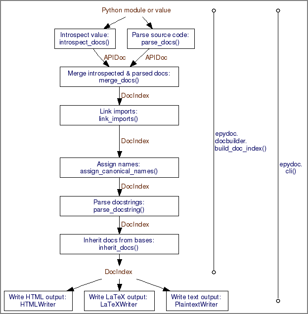
Here is a bit of my template that is stripped down to just to show what is possible.
#!/usr/bin/env python
__version__ = '$Revision: 1234 $'.split()[1]
__date__ = '$Date: 2008-01-30 $'.split()[1]
__author__ = ' put in the authors name'
__doc__='''
Example python file that is all tricked out. Designed for epydoc,
unittest and doctest. Please keep updating to make this the best
possible template file.
@requires: U{lxml<http://codespeak.net/lxml/>} - For libxml2 ElementTree interface
@requires: U{Python<http://python.org/>} >= 2.5
@requires: U{epydoc<http://epydoc.sourceforge.net/>} >= 3.0
@author: U{'''+__author__+'''<http://fix.author.url/>} FIX: replace with your name/url
@version: ''' + __version__ +'''
@copyright: 2008
@var __date__: Date of last svn commit
@undocumented: __version__ __author__ __doc__ parser success
@since: 2008-Jan-30 FIX: replace with the file creation date
@status: under development
@organization: U{somewhere<http://somewhere.edu/>} - FIX: put in URL
@license: Your license here
@bug: epydoc --check complains about unittest additions
@bug: Bug two
@todo: Keep writing example code
@todo: copy the code and replace the author and since fields
@todo: To make your code executable after check-in (to allow
for doc and unittest), do svn propset svn:executable ON yourfile.py
@todo: "svn propedit svn:keywords yourfile.py", then put in "Date Revision"
@see: U{python idioms<http://jaynes.colorado.edu/PythonIdioms.html>} -
Read this before modifying any code here.
'''
import sys
import os
######################################################################
class Template:
'''
Class documentation goes here.
>>> print "This is a doctest"
This is a doctest
'''
def __init__(self,someArg=None):
'''
Initialize the class. Add some detail here.
@param someArg: example argument
@type someArg: int
'''
pass # A way to have a do nothing stub
def aMethod(self,anotherArg):
'''
This is the detailed description of aMethod that tells you it
is a really moronic method. It does howver show how to
document a class method.
@param anotherArg: what to print
@return: prints the arg to stdout
@rtype: str
'''
print anotherArg
This is the basic overview:
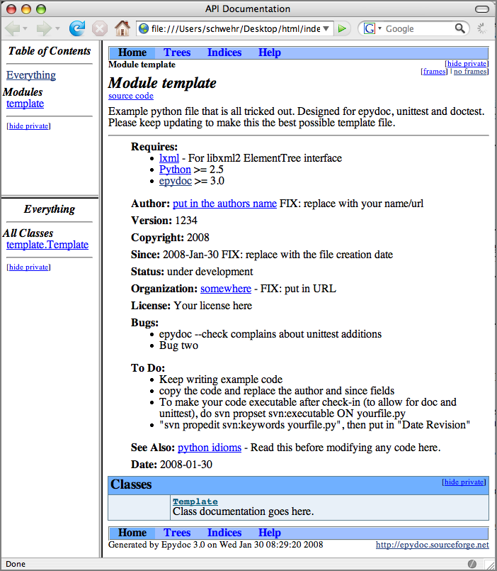
You can then drill into the templace class:
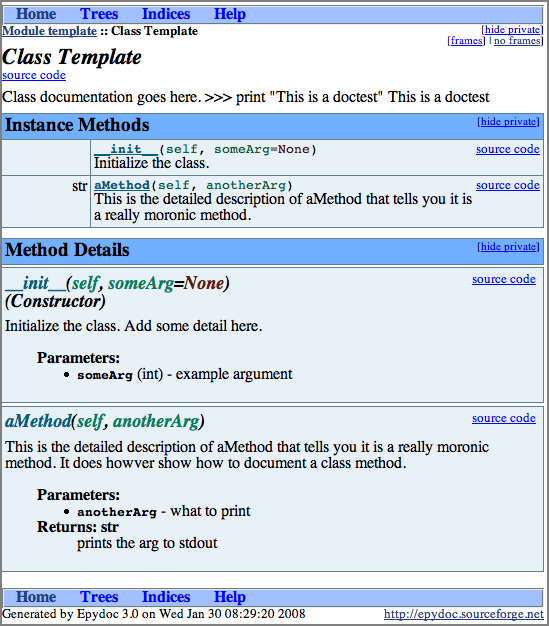
01.29.2008 12:18
scplugin - svn for mac osx finder
Bob Arko pointed me to scplugin that provides svn access
through the finder very much like TortoiseSVN. Nice!
You have to do an initial refresh of the icons to get things going:
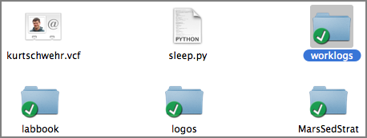
You have to do an initial refresh of the icons to get things going:
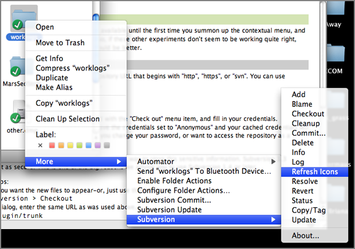
01.29.2008 07:14
Art in Bonaire with Gavia AUVs
AUVs Map Coral Reef Environment [hydro international]
... The Bonaire expedition is being led by Mark Patterson of the Virginia Institute of Marine Science (VIMS), along with co-Principal Investigators Arthur Trembanis (University of Delaware), Jim Leichter and Dale Stokes (Scripps Institution of Oceanography). Dr. Trembanis has recently placed an order for a GeoSwath-equipped Gavia for the Coastal Sediments, Hydrodynamics, and Engineering Laboratory (CSHEL) in the College of Marine and Earth Studies at the University of Delaware. As well as the Principal Investigators (and 16 students from Delaware), academics have come to assist the mission from NOAA's Undersea Research Center (NURC, USA), the University of British Columbia (Canada), and the National Oceanography Centre Southampton (UK). Technology specialists from Iceland and England are also on-hand, helping gather the data needed to understand the reef environment. . One of the key aims of the mission is to look at ways of collecting sub-sea data using novel technology. Three AUVs are mapping the corals and taking measurements from the sea around them. Two 'Gavia' man-portable AUVs along with the âÄòFetch1' AUV designed by Mark Patterson, are carrying various types of survey equipment into areas that would be dangerous to visit or slow to explore using divers or surface boats. ...
01.28.2008 20:55
Cosco Busan response report
CoscoBusanISPRFinal.190115.pdf [uscg sf]
Panel Releases Report on Cosco Busan Oil Spill Response
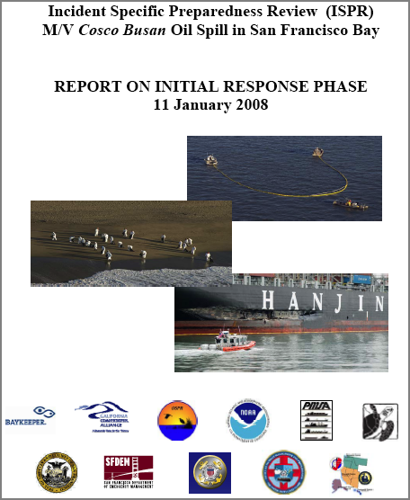
Panel Releases Report on Cosco Busan Oil Spill Response
San Francisco - A panel of outside experts formed by the commandant of the Coast Guard to study the response to the Cosco Busan oil spill today released the first of two reports it was chartered to produce. The 120-page 'Phase I' report looks at the first two weeks of response operations that unfolded in the wake of the Nov. 7 incident. A second report on the entire cleanup operation is due in several months. ... Known as an Incident Specific Preparedness Review (ISPR) team, the panel found that despite dense fog in the area, problems encountered by investigators trying to verify the amount of the oil that leaked from the ship, and other communications gaps, the amount of spill response equipment deployed during the first crucial hours exceeded by almost 10 times both state and federal requirements. The report also details the unprecedented outpouring of volunteers and community involvement in direct spill cleanup operations and the efforts of response officials to quickly create and implement safe volunteer programs. Contingency plans in place at the time of the spill specifically barred the use of volunteers for spill cleanup because of health and safety concerns including the handling hazardous materials. . The ISPR panel also found that there was effective early communication and coordination between the unified command and specific local agencies, such as the City of San Francisco Department of Public Health. The local government liaison office within the unified command, however, took several days establish a smooth process for overall coordination with local governments. More emphasis on the liaison function in plans and increased training for liaison staff are recommended in the report. ...
01.28.2008 14:37
Whale, GIS, and AIS
Random Google Connections...
From the Arc Marine website, I found this interesting paper: Tracking the Great Whales: An Arc Marine Case Study
From the Arc Marine website, I found this interesting paper: Tracking the Great Whales: An Arc Marine Case Study
Arc Marine presents a new framework for collaboration in oceanic and coastal biogeographic analysis. With a common data structure, researchers can share results without conversion, automatically integrate environmental datasets, and develop common tools. This case study explores how Arc Marine supports the scientific process for the Oregon State University Marine Mammal Program (OSU-MMP). The OSU-MMP has used satellite telemetry to track nine cetacean species across two ocean basins. Customization of the model creates a geodatabase fit for data exploration, hypothesis testing, and research permitting compliance. The standardized framework allows for automated import of ARGOS downloads and easy conversion of standard environment rasters such as HDF MODIS or netCDF. Custom applications and tools conform to the core classes of Arc Marine. Thus, other projects using common tag types can utilize the same data loading tools and analysis tools without an extensive geodatabase redesign and reprogramming process.From ArcMarine Panel 07 [PPT]:
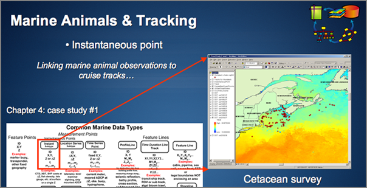
01.28.2008 13:48
WebEOC Mapper
An ESRI ArcGIS Server based disaster
response web interface:
WebEOC Mapper Released [esi911.com] WebEOC Mapper Provides the
Power of GIS for Optimized Situational Awareness, Decision Support
and Much More (Sept 2007)
Two global technology innovators have collaborated to put the power of geographic information system (GIS) technology into the hands of decision makers. ESi, the leader in crisis information management technology, and ESRI, the leader in GIS, today announced the release of WebEOC Mapper Professional (WebEOC Mapper). This Web-enabled emergency management communications system was designed for public and private organizations involved in homeland security and emergency operations. WebEOC Mapper provides users with powerful technology tools to create a dynamic, geographically based common operating picture and the ability to view data from multiple WebEOC screens simultaneously on a centralized map. It allows fast data access and dissemination critical to all phases of preparedness and response to both commanders working in an emergency operations center and first responders in the field. ...
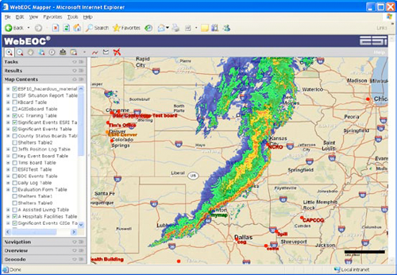
01.28.2008 13:06
Talk this evening - Anticipating Climate Change Impacts in Southern New Hampshire
Anticipating Climate Change Impacts
in Southern New Hampshire
January 28, 2008 6:30 - 8:30 pm Memorial Union Building (MUB), Theatre 1 * How will global changes in carbon dioxide translate to local changes in temperature and precipitation? * How will sea level rise affect New Hampshire coastlines and salt marshes? * How will changes in precipitation and storms influence local land use and infrastructure decisions? If you are interested in these and similar questions, join us for a seminar and panel discussion of how climate change may affect water and resource management in Southern New Hampshire. . Panelists: . Dr. Cameron Wake - Associate Research Professor, Institute for the Study of Earth, Oceans, and Space & Department of Earth Sciences, UNH. . Dr. Larry Ward - Associate Research Professor, Department of Earth Sciences, Center for Coastal and Ocean Mapping, and Jackson Estuarine Laboratory, UNH . Mr. Michael Simpson - Director, Resource Management and Conservation Program, Antioch University of New England
01.28.2008 10:54
NRC Report - A Geospatial Framework for the Coastal Zone
I have recently been asked about the
US plans for Coastal Mapping. I've got a bit more information on
the topic. There is a group called "The Interagency Working Group
on Ocean and Coastal Mapping" (IWG-OCM) that was established by the
Joint Subcommittee on Ocean Science and Technology (JSOST). The
Energy Policy Act of 2005, OMB Circular A-16 (Coordination of
Geographic Infrastructure and Related Spatial Data Activities)
began this process.
Larry Mayer's statement to congress: Statement of Larry A. Mayer, Ph.D.
The National Research Council report, A Geospatial Framework for the Coastal Zone: National Needs for Coastal Mapping and Charting [national academies press] can be read online.
Larry Mayer's statement to congress: Statement of Larry A. Mayer, Ph.D.
... Let me set my remarks in context by saying a few words about the importance of coastal and ocean mapping. We are a maritime nation. We depend on the oceans and coastal zones for commerce, for food, for resources, for recreation, for regulating our environment and climate, and for national security. Under Article 76 of the Law of the Sea Treaty, mapping can also serve to extend our sovereignty over seafloor resources far beyond our current 200 nm Exclusive Economic Zone (EEZ). Ninety-five percent of our nation's imports, by weight, are transported by sea and fourteen of the country's twenty largest urban centers are located on the coast. To assure safe navigation, to explore for, exploit and preserve our resources, to understand climate change and to protect our environment and our security, we need accurate maps of our offshore regions that tie in with the accurate maps that exist onshore. ...
The National Research Council report, A Geospatial Framework for the Coastal Zone: National Needs for Coastal Mapping and Charting [national academies press] can be read online.
|
|
|
|
 |
||
|
Read this FREE online! Full Book | PDF Summary | PDF Report Brief |
||
01.28.2008 08:20
Leopard Server review
10.5 Server version...
... Leopard Server continues the OS X Server tradition of delivering platform-independent file/print, e-mail, Web, and network edge services (such as stateful firewall, VPN, proxy, virus, and spam filtering). But it is as easy to set up and run as a desktop. Truly; the typical Mac user could get a Leopard Server going, because the default administrative interface is a match for a Mac's System Preferences. ... Open and mighty Apple, which has been known to approach challenges by inventing proprietary wheels, went full-bore on public standards with Leopard Server. Standouts among Leopard Server's standard standards are CalDAV shared calendars, Jabber/XMPP, Apache 2.2, Ruby on Rails with Mongrel and Capistrano, IPSec and PPTP VPN, RSS, and Kerberos. Apple went proprietary only on the underlying plumbing of management GUIs. SNMPv3 is supported for monitoring with open tools. ...
01.27.2008 17:02
fink update-alternatives
I finally did my first fink package
using update-alternatives as opposed to using a -bin package. The
idea here is to be able to have multiple versions of grass
installed at the same time and have a default "best" version
installed. Then if the user wishes, they can tell the system to
switch to a different version if they need it. From my draft fink
info file for grass62:
PostInstScript: <<
# assumes that the name has the version at the end... %n is grass62
update-alternatives --install "%p/bin/grass" grass "%p/bin/%n" 62
<<
PreRmScript: <<
if [ $1 != "upgrade" ]; then
update-alternatives --remove grass "%p/bin/%n"
fi
<<
From "man update-alternatives":
update-alternatives [options] --install link name path priority [--slave
link name path]...
Here is setting up the link, checking it, and removing it all by
the system administrator.
% ls -l /sw/bin/grass* -rwxr-xr-x 1 root admin 1094 Jan 27 15:38 /sw/bin/grass62 % sudo update-alternatives --install /sw/bin/grass grass /sw/bin/grass62 62 % ls -l /sw/bin/grass* lrwxr-xr-x 1 root admin 26 Jan 27 16:55 /sw/bin/grass -> /sw/etc/alternatives/grass -rwxr-xr-x 1 root admin 1094 Jan 27 15:38 /sw/bin/grass62 % update-alternatives --display grass grass - status is auto. link currently points to /sw/bin/grass62 /sw/bin/grass62 - priority 62 Current `best' version is /sw/bin/grass62. % sudo update-alternatives --remove grass /sw/bin/grass62 --verbose Checking available versions of grass, updating links in /sw/etc/alternatives ... (You may modify the symlinks there yourself if desired - see `man ln'.) Last package providing grass (/sw/bin/grass) removed, deleting it. % ls -l /sw/bin/grass* -rwxr-xr-x 1 root admin 1094 Jan 27 15:38 /sw/bin/grass62Pretty cool stuff! Just remember to only use integers for the priority.
01.27.2008 16:00
grass 6.2.3 in fink
I've got a draft info file for the
latest grass stable release (6.2.3). If you are a grass user on mac
osx 10.5, I could really use some testers. I've enabled
postgresql82, but that is about it for extensions at this
point.
grass62.info
grass62.info
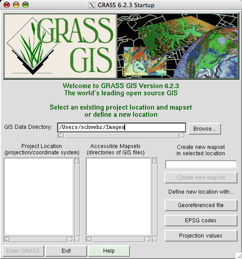
01.27.2008 13:09
irc logs
pinson on the fink IRC channel posted
some links to IRC logs. These are great examples how IRC is
actually a work tool and not just for warez, crackers, and other
less than acceptable hobbies.
From fink 20080125:
More to do. Getting these shared libraries straightened out takes a while with packages the take a long time to compile.
From fink 20080125:
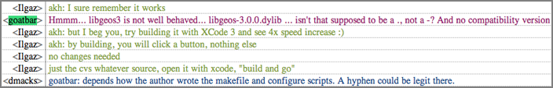
- http://ircbrowse.com/index.html
- http://ircbrowse.com/cdates.html?channel=fink
- http://www.ircbrowse.com/channel/fink/today
- http://www.opennms.org/~ranger/irc_logs/public/
More to do. Getting these shared libraries straightened out takes a while with packages the take a long time to compile.
% fink validate grass62-shlibs_6.2.3-1_darwin-i386.deb Validating .deb file /sw/fink/10.4/local/main/binary-darwin-i386/sci/grass62-shlibs_6.2.3-1_darwin-i386.deb... Error: File name '/sw/lib/grass-6.2.3/lib/libgrass_D.6.2.3.dylib' specified in Shlibs does not match install_name '/sw/lib/grass-6.2.3/lib/libgrass_D.dylib'
01.26.2008 13:26
SPRING GIS
Maria mentioned SPRING GIS to me. I
haven't heard of this one before. I was just working on packaging
issues for qgis and grass63 in fink.
SPRING is a state-of-the-art GIS and remote sensing image processing system with an object-oriented data model which provides for the integration of raster and vector data representations in a single environment. SPRING is a product of Brazil's National Institute for Space Research (INPE/DPI Image Processing Division).
01.25.2008 11:47
States and shiptracks in mapserver
With help from Hobu, I was able to
get both the states from a shapefile and ship tracks from postgis
working in a map that is projected into the Google epsg:900913
mercator projection. The trick is to specify the projection of each
layer.
Note: Hobu has an RFC in requesting a change to the mapserver projection behavior. MS RFC 37: MapServer Spatial Reference Improvements and Additions
MAP
SIZE 512 512
UNITS METERS
EXTENT -7925000 5240000 -7825000 5400000
PROJECTION
"init=epsg:900913"
END
LAYER
NAME states
TYPE POLYGON
STATUS DEFAULT
PROJECTION
"init=epsg:4326"
END
DATA statesp020/statesp020.shp
CLASS
STYLE
OUTLINECOLOR 100 100 100
END # STYLE
END # CLASS
END # LAYER
#
# Now access the database
#
LAYER
NAME "shiptrack"
PROJECTION
"init=epsg:4326"
END
CONNECTIONTYPE postgis
CONNECTION "host=localhost dbname=ais user=postgres port=5432"
DATA "track from track_lines"
TYPE LINE
STATUS ON
CLASS
NAME "Ship Tracks"
STYLE
COLOR 255 0 0
WIDTH 2
END # STYLE
END # CLASS
END # LAYER
END # MAP
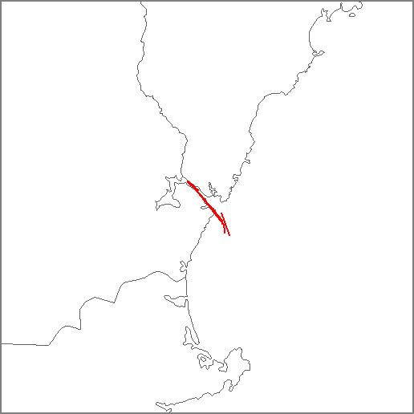
Note: Hobu has an RFC in requesting a change to the mapserver projection behavior. MS RFC 37: MapServer Spatial Reference Improvements and Additions
01.25.2008 11:01
Google project with mapserver
Turns out that with mapserver, for
data files, it is up to the user to specify the projection of files
used in layers. Here is my map file for my previous hello world
example now done up in the google mercator projection.
MAP
SIZE 512 512
PROJECTION
"init=epsg:900913" # Google Maps projection
END
UNITS METERS # Have to work in meters
EXTENT -7925000 5240000 -7825000 5400000 # Ouch... guess where this is
LAYER
NAME states
TYPE POLYGON
STATUS DEFAULT
PROJECTION
"init=epsg:4326" # Tell mapserver that this is geographic with WGS84 ellps and datum
END
DATA statesp020/statesp020.shp
CLASS
STYLE
OUTLINECOLOR 100 100 100
END # STYLE
END # CLASS
END # LAYER
END # MAP
01.25.2008 09:42
mapserver hello world
I figured I had better get the basics
down if I am going to debug some projection issues, so here is my
"hello world" for mapserver. It would be better if I had "hello
world" written out, but this is pretty simple.
% http://edcftp.cr.usgs.gov/pub/data/nationalatlas/statesp020.tar.gz % (mkdir statesp020 && cd statesp020 && tar xf ../statesp020.tar.gz)Now make this mapfile as mapserver-helloworld.map:
MAP
SIZE 512 512
EXTENT -71.25 42.5 -70.25 43.5
LAYER
NAME states
TYPE POLYGON
STATUS DEFAULT
DATA statesp020/statesp020.shp
CLASS
STYLE
OUTLINECOLOR 100 100 100
END # STYLE
END # CLASS
END # LAYER
END # MAP
Now, make the map:
% shp2img -m mapserver-helloworld.map -o mapserver-helloworld.png -i png % display mapserver-helloworld.pngNow you should see a map of the NH Sea Coast area.
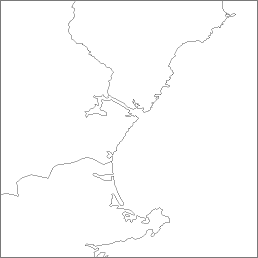
01.25.2008 09:14
National Atlas
I haven't been thinking about this
stuff much lately, so this is probably something the GIS pros out
there have been using for a long time.
The United States National Atlas [nationalatlas.gov]
I am behind my verizon EVDO link, so I am only going to download what I need, but there looks to be a lot of useful background geospatial data.
They even have aNorth American Atlas - Bathymetry. The US Geology looks interesting too.
This page has the most interesting set of layers: Geology: Earthquakes, Landslides, Shaded Relief, Volcanoes...
The United States National Atlas [nationalatlas.gov]
I am behind my verizon EVDO link, so I am only going to download what I need, but there looks to be a lot of useful background geospatial data.
% wget http://edcftp.cr.usgs.gov/pub/data/nationalatlas/statesp020.tar.gz
% ogr2ogr -f KML statesp020.{kml,shp}
% open statesp020.kml
Looks pretty good, but Alaska has got issues. I'm only looking in
New England, so it will work for me.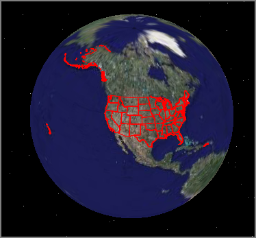
They even have aNorth American Atlas - Bathymetry. The US Geology looks interesting too.
This page has the most interesting set of layers: Geology: Earthquakes, Landslides, Shaded Relief, Volcanoes...
01.25.2008 07:10
Nippon Foundation GEBCO training program in Ocean Mapping at UNH
The Ocean Mapping 1 year program here
has been funded for the 2008-2009 year. If you are in and around
hydrography, please apply. The program will pay for your one year
program and I have to admit that I am jealous of the course work
that the Nippon/GEBCO students go through. Classes like these were
not offered at any of the universities where I have studied. There
is no longer the requirement for applicants to come from developing
nations. More information can be found here:
Nippon Foundation/Gebco Training Project - Postgraduate Certificate in Ocean Bathymetry [noaa.gov]
The preliminary application is due Feb 25th. If you are interested, download the application and get it in right now!
Also, check out where the current students are from.
Nippon Foundation/Gebco Training Project - Postgraduate Certificate in Ocean Bathymetry [noaa.gov]
The preliminary application is due Feb 25th. If you are interested, download the application and get it in right now!
Also, check out where the current students are from.
01.24.2008 20:09
EPA visit
Today, we met with a number of people
from the EPA at UNH. They have a large amount of information
available via ARC IMS. More interesting to me is that a number of
R scripts that are running
behind the scenes. Here are some screen shots I grabbed from my
browser as we were discussing some of their capabilities.
The National Coastal Assesment: NJDEP Marine Water Monitoring - MCA Sediment Results in NJ [nj.gov]
NCA Map Server [epa.gov] Using the mouse in info mode, you can get sediment toxicity.
There is access from these services to the data tables:
The National Coastal Assesment: NJDEP Marine Water Monitoring - MCA Sediment Results in NJ [nj.gov]
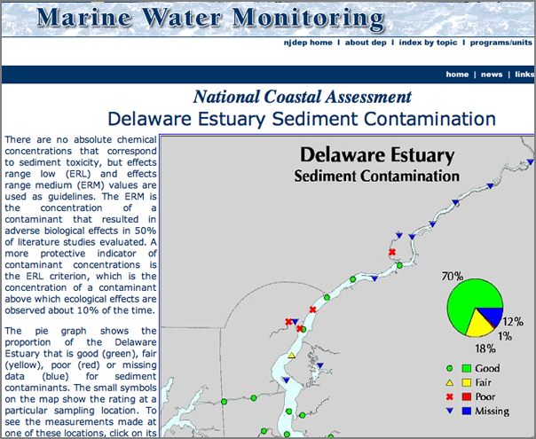
NCA Map Server [epa.gov] Using the mouse in info mode, you can get sediment toxicity.
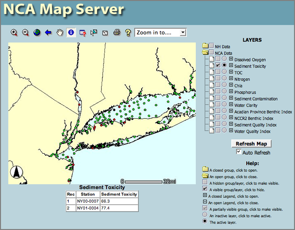
There is access from these services to the data tables:
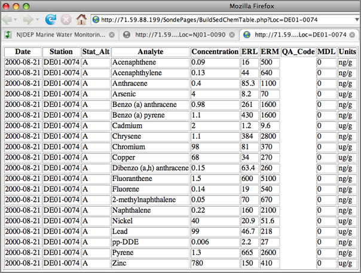
01.24.2008 16:20
gdal for mac osx fink
Thanks to Etsushi Kato, I fixed a
long standing bug in the fink package for gdal. gdal-config
--cflags was returning /sw/include when is should have been
returning /sw/include/gdal1. The magic trick is to add this line to
ConfigureParams:
--includedir=%p/include/gdal1BTW, ORT8 for Phoenix is underway. Looking for RKSML. Have you seen any good ones lately?
01.23.2008 18:24
how do you debug mapserver?
How do you debug mapserver apps? Rob
and I think we have the postgis database setup correctly, but it
only works in geographic, but going to the funky Google projection,
nothing comes up. We tried this, but I don't see anything extra
going anyplace to tell me what is happening.
So I am working on making a fink package of the python interface for mapserver5 (mapscript-py25). Maybe I can see what in the world is going on. It builds... maybe it will tell me more.
mapscript-py.info
See Alse: mapscript python [mapserver.gis.umn.edu]
shp2img -layer_debug shiptrack -map_debug 3 -all_debug 10000 -m ships.map > ~/foo3.png
So I am working on making a fink package of the python interface for mapserver5 (mapscript-py25). Maybe I can see what in the world is going on. It builds... maybe it will tell me more.
mapscript-py.info
See Alse: mapscript python [mapserver.gis.umn.edu]
01.23.2008 09:27
RTCM AIS binaries for VTS meeting yesterday
Yesterday was the RTCM SC121 Working
Group on Expanded Use of AIS within VTS meeting at the USCG RDC in
Groton, CT. We had a very productive meeting that covered a wide
range of topics. Most importantly for me, there was a big
discussion on three proposed AIS binary messages. We focused on the
meteorology and hydrography (met/hydro) message. The group has
decided to create a message that can roll up a set of various
sensor measurements from a station. The message will have a
variable number of reports and the censor type for each sub-report
can be variable. This is going to force me to extend my XML
description language, which is something I needed to do anyway. I
need a "switch" construct to handle the communications state in the
position reports anyway.
I am currently thinking along the following lines. Please give me feedback on this!
For arrays, there are two possible cases. I think it is always better to specify how many groups there are going to be. The code then will just loop through the data.
This is going to take some serious coding effort on my part. The way I have my compiler structured, it is going to be almost a complete rewrite. Maybe I will start to output C++ code this time around in addition to python.
D. Pietraszewski gave us a quick run through on AIS message types 25 and 26. I have not read through the ITU 1371-3 specification yet, so this was really helpful for me. Message 25 is especially interesting. It is designed to fit in exactly one slot and allows for units to do a carrier sense (CS) before transmitting a binary message. This will allow units to play nicer with the VHF Data Link and cause fewer packet collisions. However, that doesn't give us very many bits for application data. It can be either addressed for 98 bits of data or broadcast for 128 bits of payload.
Message 26 is another binary message type. This addressed or broadcast message like message 25, but adds multiple slots and communications state. I wish they had put the comm state before the variable length binary data, but nobody asked me. Adding the communications state will allow broadcast messages to be scheduled into slots such that all transponders in a cell will know when to expect the next broadcast message.
Somewhere on 395 in CT:
I am currently thinking along the following lines. Please give me feedback on this!
For arrays, there are two possible cases. I think it is always better to specify how many groups there are going to be. The code then will just loop through the data.
<field name="some_number" numberofbits="3" type="unsigned int">
<description>Number of data items in the array</description>
</field>
<arraygroup name="sensor_report" length="some_number">
<description>Some description</description>
<field name="field1" numberofbits="5" type="unsigned int">
<description>Some sensor value</description>
</field>
<field name="field2" numberofbits="6" type="unsigned int">
<description>Another sensor value</description>
</field>
</arraygroup>
In some of the existing binary messages, the authors counted on the
length of the data received to figure out how many groups there
will be. Please do not create any more of these types, but here is
how I would code these messages:
<arraygroup name="_GUESS_" length="some_number">
<field name="field1" numberofbits="5" type="unsigned int">
<description>Some sensor value</description>
</field>
<field name="field2" numberofbits="6" type="unsigned int">
<description>Another sensor value</description>
</field>
</switch>
For the switch construct, I had something like this flat
structure before. This made parsing easier than a deep structure.
However, I don't think this will work for all of the ways the group
wants to represent data.
<field name="slotoffset" start="154" end="167" numberofbits="14" type="unsigned int">
<description>In what slot will the next transmission occur</description>
<case>
<fieldname>slottimeout</fieldname>
<values>0</values>
</case>
<range min="0" max="2249"/>
</field>
I am thinking more along these lines that will be more familar to
programmers.
<field name="some_number" numberofbits="4" type="unsigned int">
<description>Which item to use in the switch</description>
</field>
<switch name="switchname" use="some_number">
<case values="0">
<field name="field1" numberofbits="5" type="unsigned int">
<description>Some sensor value</description>
</field>
</case>
<case values="1 3">
<field name="field2" numberofbits="6" type="unsigned int">
<description>Illustrating multiple values for a case as in commstate</description>
</field>
<case>
<case values="2">
<field name="field2" numberofbits="6" type="unsigned int">
<description>Another sensor value</description>
</field>
<case>
</arraygroup>
One big problem with the above changes comes with automatic SQL
database table creation. Do I fully expand all possible columns for
a table resulting in a very wide database table that is mostly
empty? Or do I split each case into a separate table? In this case
receiving a 3 sub-report met/hydro message would result in a SQL
block with inserts into three separate tables. I think that I
should add a hinting tag on how to handle sql tables.This is going to take some serious coding effort on my part. The way I have my compiler structured, it is going to be almost a complete rewrite. Maybe I will start to output C++ code this time around in addition to python.
D. Pietraszewski gave us a quick run through on AIS message types 25 and 26. I have not read through the ITU 1371-3 specification yet, so this was really helpful for me. Message 25 is especially interesting. It is designed to fit in exactly one slot and allows for units to do a carrier sense (CS) before transmitting a binary message. This will allow units to play nicer with the VHF Data Link and cause fewer packet collisions. However, that doesn't give us very many bits for application data. It can be either addressed for 98 bits of data or broadcast for 128 bits of payload.
Message 26 is another binary message type. This addressed or broadcast message like message 25, but adds multiple slots and communications state. I wish they had put the comm state before the variable length binary data, but nobody asked me. Adding the communications state will allow broadcast messages to be scheduled into slots such that all transponders in a cell will know when to expect the next broadcast message.
Somewhere on 395 in CT:
01.23.2008 07:46
Stanford's new Center for Ocean Solutions
$25 million Packard Foundation grant establishes Center for Ocean
Solutions [stanford.edu]
centerforoceansolutions.org
centerforoceansolutions.org
... To address these and other major threats to the marine environment, Stanford, the Monterey Bay Aquarium and the Monterey Bay Aquarium Research Institute (MBARI) have joined forces to create the Center for Ocean Solutions, a new collaboration that will bring together international experts in marine science and policy to find innovative ways to protect and restore the world's oceans. . The David and Lucile Packard Foundation provided a $25 million grant to establish the new center near the Monterey Bay Aquarium-one of the world's top aquariums, with more than 42 million visitors since 1984-and Stanford's Hopkins Marine Station, the oldest marine research lab on the West Coast. MBARI, a leading independent oceanographic research institution, is located about 20 miles to the north in Moss Landing. ...
01.21.2008 14:16
Batch of fink package updates
I just committed a big batch of fink
package updates:
database/sqlalchemy-py.info devel/astng-py.info devel/gengetopt.info devel/logilab-common-py.info devel/pylint-py.info languages/setuptools-py.info libs/magicdate-py.info sci/dap-py.info sci/pcl-core-py.info sci/quadtree-py.info text/lxml-py.info x11/xtermcontrol.infoSome of the above updates are just fixing the homepage listed for the package. Clearsilver needs some serious reworking and I totally ignored pdflib, which is drastically behind the times.
01.21.2008 14:13
UN Law of the Sea
From Jane's:
US should adopt sea law treaty, urges coastguard chief The US military's ability to operate in the Arctic Ocean will be severely hampered over the long term if the United States fails to adopt the UN Convention of the Law of the Sea (UNCLOS), the head of the US Coast Guard has told Jane's . Admiral Thad Allen, Commandant of the US Coast Guard, warned that the US will have difficulty defining its role in the international response to oil spills and other emergencies in the Arctic unless it joins the UNCLOS
01.21.2008 10:14
mbsystem, coin 2.5.0, and density for fink 10.5
I gave it a go and I've got coin
2.5.0 (coin46) working for Mac OSX 10.5 and everything needed to
build density so that I can use simpleview on my laptops. I used
SetLDFLAGS to make them work:
For gdal, I committed the 10.5 gdal 1.5.0 and the associated python module. Soon, I will push that back down to 10.4. The new python module is gdal-py25 rather than the old gdal-python-py2[45]. I am trying to drop support for python 2.4 as fast as I can.
SetLDFLAGS: -Wl,-dylib_file,/System/Library/Frameworks/OpenGL.framework/Versions/A/Libraries/libGL.dylib:/System/Library/Frameworks/OpenGL.framework/Versions/A/Libraries/libGL.dylibmbsystem gave me more trouble. There is a missing symbol issue with GLwCreateMDrawingArea that I don't know how to fix. As a result, mbsystem for 10.5 does not have mbview, but the rest of mbsystem should work.
For gdal, I committed the 10.5 gdal 1.5.0 and the associated python module. Soon, I will push that back down to 10.4. The new python module is gdal-py25 rather than the old gdal-python-py2[45]. I am trying to drop support for python 2.4 as fast as I can.
01.20.2008 19:55
php5 and mapserver5 custom info files
I've got some draft info files that
"work for me," but I won't be committing these into fink just yet.
You are welcome to download them. If you do, please let me know how
it goes. Someone recently asked me if fink is dead. Definitely not!
But, I personally need more people to send me reports when my
packages do not work. And, it doesn't hurt to look in the info file
to see what is going on.
You can see my list of fink packages here:
maintainer=Kurt Schwehr [fink pdb]
php5
For php5 The Sin says that he is close to having a new set of info files for apache2 and php5. Right now, imap support is causing the build to fail. I tried my hand at fixing the existing php5, but no luck. This file that I put up switch from postgresql80 to postgresql82 and rips out imap support.
php5-10.5.info
mapserver 5.0.0
mapserver 5.0.0 builds for me, but I am not presently setup to try it out. I still need to work on getting libgeos3 + mapserver support and I have not tried building mapscript yet. That was why I was trying to build php5.
mapserver.info
mbsystem needs some attention. I think it is suffering from the OpenGL bug that Apple introduced. Hopefully, I will get to this soon.
Preparing_for_10.5 [fink wiki] suggests something linke this for LDFLAGS:
coin is farther down my list but will get bumped up soon for Phoenix operations usage. cwp-su (seimic unix) is prett low on the list right now. And for the rest, I really need to run through and check on them. There are 90 packages listed for me, but there is not really that many as many are various python variants.
You can see my list of fink packages here:
maintainer=Kurt Schwehr [fink pdb]
php5
For php5 The Sin says that he is close to having a new set of info files for apache2 and php5. Right now, imap support is causing the build to fail. I tried my hand at fixing the existing php5, but no luck. This file that I put up switch from postgresql80 to postgresql82 and rips out imap support.
php5-10.5.info
mapserver 5.0.0
mapserver 5.0.0 builds for me, but I am not presently setup to try it out. I still need to work on getting libgeos3 + mapserver support and I have not tried building mapscript yet. That was why I was trying to build php5.
mapserver.info
mbsystem needs some attention. I think it is suffering from the OpenGL bug that Apple introduced. Hopefully, I will get to this soon.
Preparing_for_10.5 [fink wiki] suggests something linke this for LDFLAGS:
-Wl,-dylib_file,/System/Library/Frameworks/OpenGL.framework/Versions/A/Libraries/libGL.dylib:/System/Library/Frameworks/OpenGL.framework/Versions/A/Libraries/libGL.dylibxsonar is on the radar. I am waiting to hear from Bill, Jenna and Liz how the testing is going. I also hear rumors that Danni has been looking at the problem too, but that is second hand.
coin is farther down my list but will get bumped up soon for Phoenix operations usage. cwp-su (seimic unix) is prett low on the list right now. And for the rest, I really need to run through and check on them. There are 90 packages listed for me, but there is not really that many as many are various python variants.
01.19.2008 17:45
CCOM Makes Wired
Go Michelle! She has a
blog post where she points out that CCOM made Wired.
Nice!
Foreigners Keep Out! High Tech Mapping Starts to Redefine International Borders
Not a great title and there has been a lot of miss-representation about what went on in the Arctic this last summer. So that is it is clear: The US was already sending the USCG Ice Breaker Healy up there before the Russians pulled their titanium flag stunt.
Law of the Sea Mapping Program at CCOM/UNH. Feel free to head over there and download the data. It's free.
Here is a CCOM map of the work:
And last May, I presented the idea of accessing this data via Google Earth. Image is by Schwehr, Gardner, and Sullivan:
Foreigners Keep Out! High Tech Mapping Starts to Redefine International Borders
Not a great title and there has been a lot of miss-representation about what went on in the Arctic this last summer. So that is it is clear: The US was already sending the USCG Ice Breaker Healy up there before the Russians pulled their titanium flag stunt.
... Some 3,200 miles and 47 degrees of latitude away, at the University of New Hampshire's Center for Coastal and Ocean Mapping (CCOM), Jim Gardner followed the action with intense interest and a wry smile. One of the country's foremost marine geologists, Gardner knew the flag-planting itself was meaningless; it gave the Russians as much legal claim to the undersea Arctic as the US got to the moon when Armstrong and Aldrin put up the Stars and Stripes in the Sea of Tranquility. He also knew, however, that the Russians had a legitimate reason to celebrate. The stunt capped off a Russian study of vast swaths of uncharted seafloor, including the survey of an undersea mountain range called the Lomonosov Ridge. Canada and Denmark are also arguing that the ridge is their own, but Russia's new maps could prove it actually belongs to Moscow. And it's this kind of work - not the flag-planting - that is at the center of the current "landgrab" in the Arctic, and indeed across the globe. ...
Law of the Sea Mapping Program at CCOM/UNH. Feel free to head over there and download the data. It's free.
Here is a CCOM map of the work:
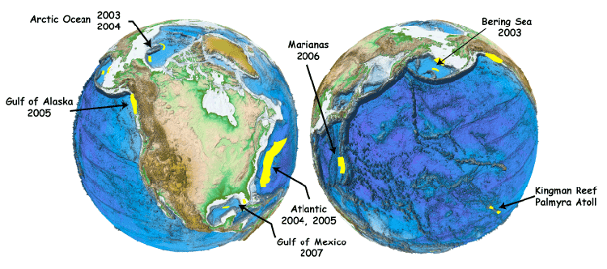
And last May, I presented the idea of accessing this data via Google Earth. Image is by Schwehr, Gardner, and Sullivan:
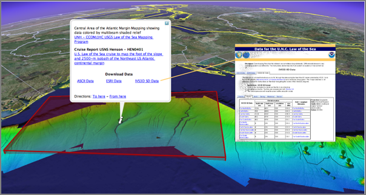
01.19.2008 12:13
new gdal python package for fink
With help from Hobu and Rob, I have a
new python package for gdal using 1.5.0. It needs testing, so
please give it a try. You can comment on the fink-gis group thread
or email me.
gdal 1.5.0 with python needs testing [groups.google.com]
Please test gdal 1.5.0 and the python bindings. I'm going to give it a few days and then put this in place of the existing gdal. This is a complete rework on how python is supported. Many thanks to the gdal team for the improvements in packaging!
http://vislab-ccom.unh.edu/~schwehr/software/fink/gdal-py.info http://vislab-ccom.unh.edu/~schwehr/software/fink/gdal.info
Put these two files in /sw/fink/10.5/local/main/libs
If anyone wants to take a stab a packaging other languages via the swig interface, let me know.
gdal 1.5.0 with python needs testing [groups.google.com]
Please test gdal 1.5.0 and the python bindings. I'm going to give it a few days and then put this in place of the existing gdal. This is a complete rework on how python is supported. Many thanks to the gdal team for the improvements in packaging!
http://vislab-ccom.unh.edu/~schwehr/software/fink/gdal-py.info http://vislab-ccom.unh.edu/~schwehr/software/fink/gdal.info
Put these two files in /sw/fink/10.5/local/main/libs
If anyone wants to take a stab a packaging other languages via the swig interface, let me know.
01.19.2008 11:21
Raccoon
This morning, I noticed a critter
running through the yard two doors down. I've only seen a raccoon
from the house once before and that was a Bailey discovery at night
from the sun room. I hope this one isn't unhealthy being out during
the day.
Running up my driveway:
Trying to chase a squirrel up my maple tree:
He gave up on the squirrel and headed for the pine trees. He looks a little wet on his bottom half.
Running up my driveway:
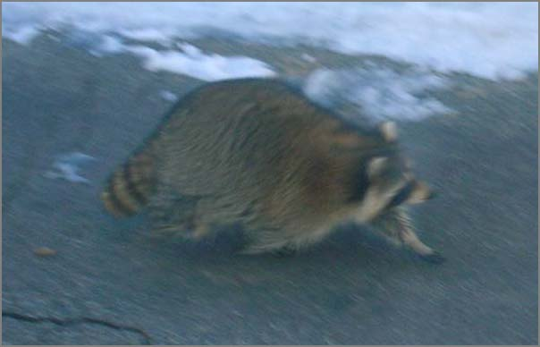
Trying to chase a squirrel up my maple tree:
He gave up on the squirrel and headed for the pine trees. He looks a little wet on his bottom half.
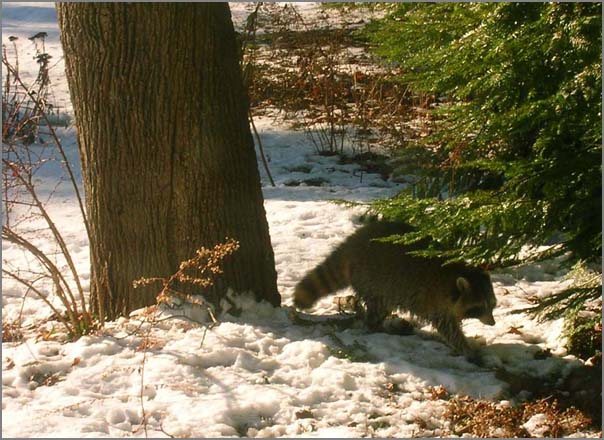
01.19.2008 10:02
ipython notes
I just watched part I of Jeff Roush's
ipython videos on showmedo. I use
ipython almost every day, but I really don't use much of its power.
Here are some quick notes of some things that I did't know.
who # list all variables who int # list all int variables whos # variables detailed listing psearch *sg* # List all variables that have sg in their name psearch *sg* int # List all variables with sg that are ints store msgflag # keep a variable for future sessions store # List store ls .ipython/db/autorestore/msgflag logstate # Get status logstart logon logoff lsmagic logon? logon?? p sys.path # p is an alias print page sys.path # pretty print help 'for' help() # interactive help topics PRIVATENAMES import re pdef re.match pdoc re.match pinfo re.match # def and doc pfile re.match # Lets you page through the source file edit -x re.match # edit the source file that contains re.match quit()Then take a look at the log file generated...
...
#log# It is safe to make manual edits below here.
#log#-----------------------------------------------------------------------
msgflag = 1
pi = 3
msg = 'hello'
warning = None
msgflag
_ip.magic("who ")
help(who)
_ip.magic("who int")
_ip.magic("whos ")
_ip.magic("psearch *sg*")
_ip.magic("psearch sg*")
_ip.magic("psearch *sg* int")
sore msgflag
_ip.magic("store msgflag")
_ip.magic("store ")
...
01.18.2008 20:31
SensorWare Systems adds KML download
I was talking to Myche this evening
and he showed me some of the work going on at SensorWare Systems. They
have added KML export. They have had a really nice web app for
quite a while.
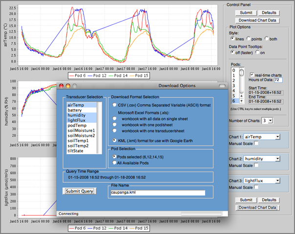
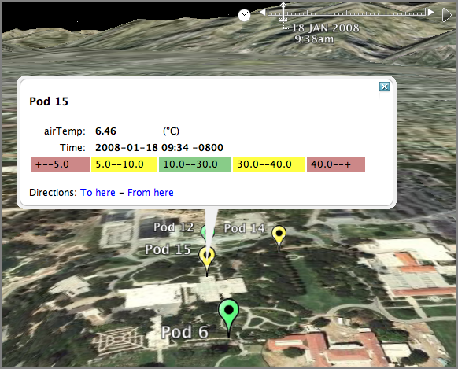
01.18.2008 19:44
Mac OSX 10.5.1 X11 install problems
There have been a number of people on
the fink mailing lists that have been getting weird problems with
fink that boil down to the Apple installers not putting all the
necessary files onto a Mac. We figured out today that was why Rob's
laptop could not compile ghostscript. e.g. this:
msg26382.html [fink users post archive]a
gcc -DHAVE_MKSTEMP -DHAVE_HYPOT -DHAVE_FONTCONFIG -O2 -Wall \ -Wstrict-prototypes -Wmissing-declarations -Wmissing-prototypes \ -Wwrite-strings -Wno-strict-aliasing -fno-builtin -fno-common \ -DHAVE_STDINT_H -DGX_COLOR_INDEX_TYPE="unsigned long long" -I./obj \ -I./src -I/usr/X11/include -o ./obj/gp_unix.o -c ./src/gp_unix.c \ In file included from ./src/gp_unix.c:17: ./src/pipe_.h:39: warning: function declaration isn't a prototype ./src/gp_unix.c:25:37: error: fontconfig/fontconfig.h: No such file or directoryMy solution today was a bit different than the normal one suggested by people on the fink mailing lists. They suggest telling the mac to force remove the X11SDK and reinstall. We didn't have the install media on us, so I made a tar of the missing headers and dropped them into the right spot on his computer.
cd ~/Desktop wget ../attachments/2008-01/mac-10.5.1-x11-fontconfig-headers.tar.bz2 cd /usr/X11/include/fontconfig sudo tar xf ~/Desktop/mac-10.5.1-x11-fontconfig-headers.tar.bz2Warning... the above assume that the only problem is the missing headers in that one particular place. If anything else is borked in the Apple install, then it still is may fail for other things. The more Apple way is:
msg26382.html [fink users post archive]a
Looks like you might need to re-install x11. pkgutil --forget com.apple.pkg.X11User pkgutil --forget com.apple.pkg.X11SDKLeo pkgutil --forget com.apple.pkg.X11DocumentationLeo pkgutil --forget org.x.X11.pkgThen reinstall X11. On my machine, these are what I have installed:
pkgutil --pkgs | grep -i X11 com.apple.pkg.X11User com.apple.pkg.X11SDKLeo com.apple.pkg.X11DocumentationLeoSee Also: LeopardInstelSetup [noeckel at uoregon]
01.18.2008 19:10
Nautical Publication Standards
Pilot Program For Nautical Publication Standards [hydro
international]
The primary goal of this pilot project is to support the development of global standards for nautical navigation publications that can effectively be implemented in commercial products and services. BSH has contributed substantially to the effort of the IHO Standardization of Nautical Publications Working Group (SNPWG) to define a data model for nautical publications. BSH has begun restructuring the text in their sailing directions books to support this data model. Jeppesen and BSH plan to present findings of the pilot study, and samples of Jeppesen Marine's electronic outputs, to the SNPWG in April 2008. . According to the agreement, the two will undertake joint research in the development of mathematical models of ships, carry out joint conferences, conduct independent expert evaluation of navigational information and designs and jointly develop distance-learning educational programs on nautical astronomy and navigation using electronic charts. In addition, the two will co-operate extensively in training and doctoral study.
01.18.2008 19:08
Open source geospatial software
It's been an intense 2 days for me in
terms of open source GIS/geospatial software. My noaadata package
is almost to the point where it can reliably send ship tracks to
postgis and hopefully in the next couple days, Rob and I can get
live ship tracks being visualized through the openlayers/mapserver
based application that Rob is leading.
Yesterday, Norm Vine came to CCOM and spent a bit of time talking with me. He pointed me to a whole range a neat things... He got me to jump on the gdal IRC group. We talked about possibilities for OSSIM Planet work this summer.
He pointed me to this FOSS2007 talk:
Minerva: Integrating GIS, 3D and Virtual Reality by Adam Kubach at ASU. minerva-gis.org/ and descisiontheater.org
The Scientific and Engineering Research Visualization blog looks pretty cool but has only 7 posts in the last year. serv-asu.blogspot.com:
Trackback: Minerva Open Source GIS [slashgeo]
Yesterday, Norm Vine came to CCOM and spent a bit of time talking with me. He pointed me to a whole range a neat things... He got me to jump on the gdal IRC group. We talked about possibilities for OSSIM Planet work this summer.
He pointed me to this FOSS2007 talk:
Minerva: Integrating GIS, 3D and Virtual Reality by Adam Kubach at ASU. minerva-gis.org/ and descisiontheater.org
The Scientific and Engineering Research Visualization blog looks pretty cool but has only 7 posts in the last year. serv-asu.blogspot.com:
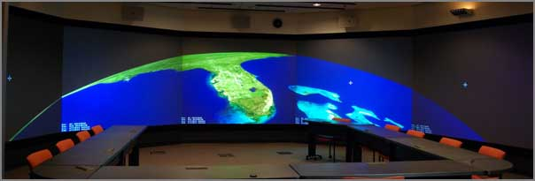
Trackback: Minerva Open Source GIS [slashgeo]
01.18.2008 13:57
gdal in Google applications
Just realized today that Google
extensively uses gdal in their programs. On my 10.5:
pypi GDAL page
After that, I need to look at mapserver 5.
locate libgdal /Applications/Google Earth Pro.app/Contents/MacOS/libgdal.dylib /Applications/Google Earth.app/Contents/MacOS/libgdal.dylib /Applications/Google SketchUp 6/SketchUp.app/Contents/Frameworks/libgdal.dylibAnd thanks to Hobu on the gdal IRC list, I should have spiffy new packages for gdal 1.5.0 with python support very soon. I didn't realize that there is distutils and setuputils support now in gdal-1.5.0/swig/python.
pypi GDAL page
After that, I need to look at mapserver 5.
01.17.2008 14:13
noaadata 0.33 out yesterday
Yesterday, I released noaadata 0.33.
Here is the Changelog entry:
- Draft live AIS feed to postgis with track_lines
- waterlevel2.xml draft message for NOAA PORTS
- Improved description in setup.py
- Parses more fields in uscg.py
- Added an AIS endnote library and bibtex
- ais_port_forward does a better job of reconnecting to destination port
- ais_db.py now can add or remove the track_lines postgis table
01.17.2008 12:00
Allision with Petaluma RR Bridge
Coast Guard
Investigating Tug and Barge Allision with Petaluma Railroad
Bridge [piersystem.com uscg]
SAN FRANCISCO, Calf. - The United States Coast Guard is investigating a tug and barge allision with the Petaluma railroad bridge. At approximately 2:30 am the tug Trig Lind and barge carrying sand were on a northbound transit from San Francisco to Petaluma when they struck the Petaluma railroad bridge. The 71.5 foot tug and 206 foot barge reported no damage to the vessels. The bridge suffered damage measuring approximately fifteen feet by ten feet. Alcohol testing was completed and the results were negative; drug test results are forthcoming. Upon notification, the CG immediately launched a small boat and marine casualty investigators. A Coast Guard HH-65 helicopter was also diverted to respond to the marine incident. The Petaluma railroad bridge owner's engineer inspected the bridge today and will further inspect the bridge tomorrow. All assets report that there are no signs of pollution as a result of the allision. The Coast Guard has begun a marine casualty investigation.Photo 1
01.17.2008 11:43
Cosco Busan first report
Cosco Busan Incident Team Sends First Report to Coast Guard
Headquarters [coastguardnews.com] or what looks to be the
original source: Team Sends First
Report on Cosco Busan Incident [piersystem.com - USCG
DHS]
ALAMEDA, Calif. - A team formed here to analyze the response to the Cosco Busan oil spill in San Francisco Bay sent the first of two reports to Coast Guard headquarters in Washington, D.C., Wednesday. The 112-page report focuses on the first two weeks, or initial phase, of the response to the Nov. 7 spill and was sent to Vice Adm. Robert Papp, the service's Chief of Staff.
The report was prepared by the Incident Specific Preparedness Review (ISPR) team chartered by the Vice Adm. Papp at the direction of the Commandant of the Coast Guard. A second report covering the remainder of the response phase and more long-term response issues is slated to be completed by the ISPR team by May 2008. The team was not tasked with determining the cause of the Cosco Busan incident, but rather was directed to review objectively the response actions undertaken following the incident compared to the plans in effect at the time. . While not an investigation, the ISPR process is an administrative assessment rooted in Coast Guard marine safety directives. It provides a method for outside entities to join the Coast Guard to review the response of the Unified Command to a particular incident. The ISPR focused on two primary areas: preparedness and response. An ISPR report identifies lessons learned and makes recommendations. . "The Coast Guard and our response partners share the public's concern about environmental protection; indeed, this is a core Coast Guard mission," said Vice Adm. Charles D. Wurster, Commander, Coast Guard Pacific Area, whom Papp tasked to oversee the ISPR. . "We welcome the information and recommendations of the review panel and will work as a team to improve our response system in any way possible. Coast Guard partnerships with state and local agencies as well as other organizations and industries are the key to success. The lessons learned in this incident will sharpen our response capabilities in the event of any emergency or other incident," he said. . Chaired by Rear Adm. Carlton Moore, U.S. Coast Guard Reserve (retired), the ISPR team is comprised of senior representatives from the Pacific Merchant Shipping Association, California Office of Spill Prevention & Response, Pacific States/British Columbia Oil Spill Task Force, City and County of San Francisco Department of Emergency Management, the National Oceanic & Atmospheric Administration Office of Response and Restoration, California Coastkeeper Alliance and San Francisco Baykeepers. . Public release of the report is expected in approximately two weeks.
01.17.2008 07:41
Boston Port Operations Group
Yesterday, I got a chance to go to a
Boston Port Operations Group (POG) meeting. It was a chance for me
to meet a lot of nice people.
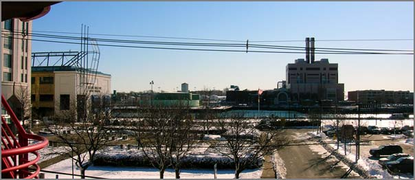
01.17.2008 07:16
Mac OSX 10.5 Server has a wiki built in
Does anyone know which wiki this is
that mac osx server 10.5 comes with?
Mac OS X Server - Features - Wiki Server [apple.com]
Mac OS X Server - Features - Wiki Server [apple.com]
Mac OS X Server makes it easy for groups to collaborate and communicate through their own wiki-powered intranet website complete with group calendar, blog, and mailing list. Users can create and edit wiki pages, tag and cross-reference material, upload files and images, add comments, and search content with point-and-click ease. ... The wiki blog is the perfect place for sharing team news and status reports or encouraging brainstorming. ...
01.17.2008 07:10
Another ship hits a SF Bay Area bridge
3 allisions in 3 months for San
Francisco.
Ship Hits Bay Area Bridge...Again
Ship Hits Bay Area Bridge...Again
PETALUMA, Calif. (KCBS) -- For the third time in three months a ship has collided with a Bay Area bridge. . The US Coast Guard says that around 2:30 Wednesday morning, a tug and barge heading from San Francisco to Petaluma struck the Petaluma railroad bridge. Offiicials say neither the tug nor barge were damaged, but a section of the bridge measuring fifteen feet by ten was damaged. . Coast Guard officials say those onboard the vessels were immediately tested for alcohol and drugs. The alcohol test came back negative, showing no one had been drinking. Results from the drug test will take longer to process. . There were no signs of pollution following the accident. The Coast Guard is still investigating the accident.and NOVATO - Tug, barge hit bridge over Petaluma River [sfgate/San Francisco Chronicle]
A tug and a sand barge ran into the Northwestern Pacific Railroad bridge over the Petaluma River at Black Point near Novato early Wednesday, causing an unknown amount of damage to the bridge, the Coast Guard reported. . The accident was the third time in a little over two months that a bridge on San Francisco Bay or its tributaries has been hit by a vessel. On Nov. 7, a cargo ship ran into the Bay Bridge, causing a 58,000-gallon oil spill, and last week, an oil barge being towed by an ocean-going tug hit the Richmond-San Rafael Bridge. . No oil was spilled in the Richmond-San Rafael accident, and neither the tug nor the barge spilled any cargo in the Petaluma River incident. . The Coast Guard said Wednesday's accident occurred about 2 a.m. when the 71.5-foot tug, accompanying a 206-foot sand barge, hit the bridge. The river bridge, which swings to allow vessels to pass through, is normally kept in an open position. . No trains have operated over the bridge in several years. The bridge is located on the Marin-Sonoma county line near where State Highway 37 crosses the Petaluma River.
01.16.2008 06:33
Web services for the National Water Information System
An interesting article that I need to
grab: http://dx.doi.org/10.1016/j.envsoft.2007.01.005
Goodall et al., A first approach to web services for the National Water Information System, Environmental Modelling & Software
Goodall et al., A first approach to web services for the National Water Information System, Environmental Modelling & Software
A wealth of freely available hydrologic data are provided by governmental organizations including in situ observations, geospatial data sets, remote sensing products, and simulation model output. Despite having access to this information, much of the data remain underutilized in the hydrologic sciences due in part to the time required to access, obtain, and integrate data from different sources. Web services offer a means for sharing hydrologic data more openly by providing a standard protocol for machine-to-machine communication. We have used this new technology to create a machine accessible interface for the National Water Information System (NWIS), an online repository of historical and real-time streamflow, water-quality, and ground water level observations maintained by the United States Geological Survey (USGS). These services provide a middle-layer of abstraction between the NWIS database and hydrologic analysis systems, allowing such analysis systems to proxy the NWIS server for on-demand data access. We intentionally designed the services to be generic and applicable to other hydrologic databases, in order to provide interoperability between disparate data sources. Performance tests showed that, for time series with less than 1000 observations, the web services layer added minimal overhead in terms of data response time, and development of an example client application for time series visualization highlighted some of the benefits and costs of using web services for data access.
01.15.2008 14:35
Polluting Shipper Violated Probation
Arterton: Polluting Shipper Violated Probation [New Haven
Independent]
The Greek shipping company fined nearly $5 million late last year in a New Haven federal courtroom for dumping waste oil into international waters and covering its tracks found itself aground on a similar reef in that court Thursday, this time ruled in violation the terms of its probation. ... The M/T Dromeas, a 60,000-ton tanker owned by Ionia, did not have the required equipment on board. The U.S. Attorney filed papers accusing the company of violating the probation. ... At least 968 tons of oil-contaminated waste were unaccounted for in the Kriton's oil record books. In addition to falsifying oil record books, Ionia Management submitted false statements in environmental compliance checklists that it was required to submit to the U.S. Coast Guard as part of its probation from the 2004 conviction in the Eastern District of New York, according to the court's ruling. ... At issue is the equipment on board ship that confines oily water and monitors that no oily water is discharged into the sea. Arterton had ordered that equipment that prevents this discharge be installed on all ships making port in the U.S., saying in her order that all these ships must have a "white box" on board. Assistant U.S. Attorney Bill Brown told the court "it is clear" that the oil-content monitors the ship did have were not the same as the "white box" mentioned in the court's order. ...Would be interesting to know exactly what device this is that the court ordered to be installed on the company's vessels.
01.15.2008 09:33
morning visitor ... an owl
My neighborhood got a morning visit
from an owl.
The owl got visited by a hawk and then harassed by a bunch of crows. The owl stood its ground and was still there when I left for work. If anybody knows the exact types these birds are, please email me and I will update it hear.
The owl got visited by a hawk and then harassed by a bunch of crows. The owl stood its ground and was still there when I left for work. If anybody knows the exact types these birds are, please email me and I will update it hear.
01.14.2008 14:54
Driscoll lab students
I thought I lost this photo, but
found it last week going through some backups looking for something
else. This is from an SIO Holiday party in either 2004 or 2005. The
grad students of the Driscoll lab at the time:
Top row: Danny, Alex, Leah, Kurt
Bottom row: Becca, Nico, Santa, and Liz
Not Pictured: Jenna, Jen, Dingler, or Christie
Note: this was a crummy polaroid scanned on a dirty scanner.
Top row: Danny, Alex, Leah, Kurt
Bottom row: Becca, Nico, Santa, and Liz
Not Pictured: Jenna, Jen, Dingler, or Christie
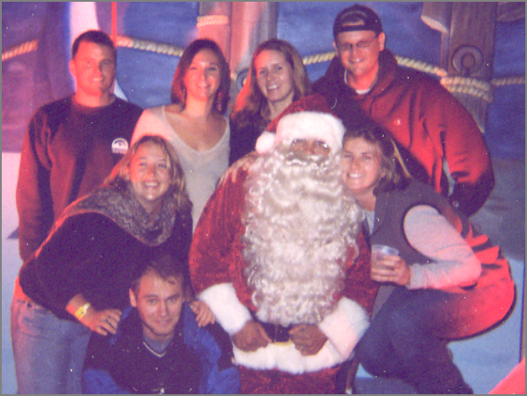
Note: this was a crummy polaroid scanned on a dirty scanner.
01.14.2008 13:06
Helium a looming serious problem
Liquid helium is already becoming a
serious problem for people doing paleomagnetics. Julie mentioned at
AGU that the rising prices for Helium are making it become a larger
fraction of research budgets that are already pretty tight. Places
are looking to start recycling helium, but many research labs are
far from any place that could handle re-liquifying the stuff.
From slashdot (Helium Crisis Approaching)... "the world's largest reserve, outside of Amarillo, Texas, that supplies are expected to be depleted there within the next eight years." [sciencedaily.com]
From slashdot (Helium Crisis Approaching)... "the world's largest reserve, outside of Amarillo, Texas, that supplies are expected to be depleted there within the next eight years." [sciencedaily.com]
01.12.2008 08:43
Added noaadata to python pypi (aka cheeseshop) database
I finally got around to adding
noaadata to the pypi database:
http://pypi.python.org/pypi/noaadata-py/0.32
I have just submitted the project to freshmeat. Take a look at my freshmeat page to see if the package has been approved:
http://freshmeat.net/~schwehr/ now lists http://freshmeat.net/projects/noaadata/.
http://pypi.python.org/pypi/noaadata-py/0.32
I have just submitted the project to freshmeat. Take a look at my freshmeat page to see if the package has been approved:
http://freshmeat.net/~schwehr/ now lists http://freshmeat.net/projects/noaadata/.
01.11.2008 15:03
Boston LNG security
Officials Agree Security in Port of Boston Robust
Following a GAO report questioning the Coast Guard's ability to address LNG and oil tanker security risks issued earlier this week, Captain Gail Kulisch, the U.S. Coast Guard officer in charge of the Port of Boston, told the Boston Globe that his command has "a very robust safety and security plan with many partners contributing to that for each and every transit [of LNG and oil tankers]." Citing assurances from state and federal officials, Everett, Mass., Mayor Carlo DeMaria Jr. said, "The Coast Guard might be stretched thin, but not here in Everett." ...
01.11.2008 13:32
SimpleDEMViewer
Steve L. pointed me to this
application. I haven't had the chance yet to give it a spin.
SimpleDEMViewer [apple.com]
[image from the Apple website]
[image from the Apple website]
01.11.2008 11:01
noaadata 0.32
I am very close to having realtime
updates working for AIS in postgis. There have been a lot of
changes to noaadata since the last release in early December. Here
is the ChangeLog message:
- 0.32 - 2008-Jan-11 - noaadata-py-0.32.tar.bz2
- Preliminary release of live AIS feeds
- Lots of documentation cleanup
- Added ais_db.py for creating and destroying database tables
- ais/__init__.py changed to provide lists of messages for more automation
- Added ais message 15 - interrogation
- Now builds with ais messages 15, 23-26
- Added timed_circular_notice.xml to replace the right whale specific message
- Fixed messages 15 and 22 so the do not have field collisions
- All ais messages now have a dbTableName in their module
- cleanup xymt2kml.py
- port-server renamed to port_server
- ais_build_{sqlite3,postgis} are getting better, but still need work to handle more message types
- ais_build_sqlite3 uses the python 2.5 built in sqlite interface. Better than using pysqlite2
- Added ais_port_forward.py and ais_net_to_postgis.py to scraps. These will get moved over to scripts soon
- Added uscg.py to aisutils for parsing the uscg fields from nmea strings
- Added database.py to aisutils. Makes working with ais and databases much simpler
- Fixed the serial logger to report 'r' in front of station. Doesn't yet handle r or b
svn diff -r {2007-12-05} | colordiff
01.11.2008 08:52
finkproject.org site troubles
The fink project's finkproject.org expired this morning.
Users apparently see godaddy's web page. I still have the dns
cached, so I don't see it. The team is working on it.
01.11.2008 07:31
Barge hits Richmond Bridge
Another event in the SF Bay...
Oil Barge Strikes SF Richmond-San Rafael Bridge [efluxmedia]
A 309-foot barge carrying 63,000 barrels of heavy oil through San Pablo Bay struck the Richmond-San Rafael Bridge on Thursday night, but the U.S. Coast Guard reported no sign of oil spilled at the scene of the accident. . The incident comes two months after the Cosco Busan, one of the China COSCO Holdings Co LTD's cargo struck a Bay Bridge tower and caused a 58,000-gallon oil spill into the San Francisco Bay. The spill led to appreciatively 1,800 dead birds, out of which 648 died after being rescued, the Department of Fish and Games said. . The barge was heading on a foggy weather out to sea from Rodeo on Thursday, being pushed by a tugboat when it struck the Richmond-San Rafael Bridge around 6 p.m. The U.S. Coast Guard officials reported that the barge, on its name Cascades, had hit a piling on the west side of the bridge with its starboard bow. ...and Barge hits Richmond Bridge; Coast Guard investigating [mercurynews]
A barge struck the Richmond-San Rafael Bridge Thursday evening, according to the Coast Guard. The extent of damage, if any, was not immediately known. . The bridge was not closed following the 6:20 p.m. accident, according to the California Highway Patrol. . No pollution has been detected in the water, Coast Guard Petty Officer Anastasia Devlin said. . Fog limited visibility in portions of the Bay Area on Thursday night, although it was not clear whether that played a role in the accident. Visibility was three miles at Oakland International Airport and a mile and a half at San Francisco International Airport, said meteorologist Steve Anderson of the National Weather Service. . The Coast Guard pushed the barge away from the bridge and anchored it, and was still investigating the incident Thursday night. ...
01.10.2008 21:59
my old friend netcat
Back in 1999 while working on the
Polar Lander, Anil introduced me to netcat. This was the original
netcat. It worked great. We used it to data through a firewall from
the flight operations network over to the web backends. It didn't
have a configure script, so I set it up to use GNU autoconf and
tried to contribute it back to the project. I never heard anything.
However, there is now a new generation of autoconf: http://netcat.sourceforge.net/
I am using netcat to help debug a little network server for AIS. I need to be able to simply feed some data to a python script that connects to a port. The same script is going to transmit a subset of the data out to another port that will eventually on a separate host. It's in fink, so "fink install netcat".
In the first window, set up the receiver
I am using netcat to help debug a little network server for AIS. I need to be able to simply feed some data to a python script that connects to a port. The same script is going to transmit a subset of the data out to another port that will eventually on a separate host. It's in fink, so "fink install netcat".
In the first window, set up the receiver
% nc -l -p 31402Then in the 2nd window, set up the transmission:
% cat 123.ais | netcat -l -p 31401Then I run my bridge and a mess of data gets printed in the receive window.
ais_port_forward.py -vThere is also a program called socat that is supposed to be more powerful, but I haven't done more than install it.
fink install socat-sslsocat has many more options that look very handy.
01.10.2008 11:49
USCG and the Northeast Gateway Security Plan
USCG Close to Approving Northeast Gateway Security Plan, Operations
Manual [LNGLawBlog]
Reuters reports that a spokesperson for the U.S. Coast Guard predicted that final approval of the Northeast Gateway LNG terminal's security plan and operations manual would be granted by the end of January. The piece also notes that start-up of the terminal may be key to German firm RWE's reported purchase of 50% of Northeast Gateway project developer Excelerate Energy.
01.09.2008 17:57
colordiff
My blog has been severly lacking in
the other than black-and-white category lately. I haven't been
taking much in the way of pictures, so you will have to put up with
a bit of color code. This was posted today here:
colordiff: put some color in your diffs [debaday].
colordiff is already in fink, so I did a "fink install colordiff" and now can do: "svn diff | colordiff". Too bad it doesn't work with less, but it is still very cool when writing up svn commit log messages.
So a little color... and some amusing code that I wrote today.
On a totally different note, the warm weather (60F) combined with all the snow on the ground has been making for steamy snow banks. Michelle W. has a nice photo on her blog today of this:
January morning [michellejw.wordpress] (which is her new blog location).
colordiff is already in fink, so I did a "fink install colordiff" and now can do: "svn diff | colordiff". Too bad it doesn't work with less, but it is still very cool when writing up svn commit log messages.
So a little color... and some amusing code that I wrote today.
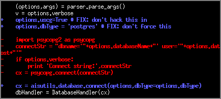
On a totally different note, the warm weather (60F) combined with all the snow on the ground has been making for steamy snow banks. Michelle W. has a nice photo on her blog today of this:
January morning [michellejw.wordpress] (which is her new blog location).
01.09.2008 13:40
setting up a postgresql/postgis database on mac osx 10.5 with fink
Now that I have libgeos2 installed
via fink for OSX 10.5, here are my notes on creating a
database for AIS. First, the Mac needs to have the shared memory
kernel parameters changed from the defaults. This is done through
the sysctl.conf file. Once these parameters are all set, they are
stuck until the machine is rebooted. Create an /etc/sysctl.conf.
You probably do not have a sysctl.conf, but use >> to append,
just in case you already have settings from some other software
already in there.
Now take a look at the database tables:
% sudo cat << EOF >> /etc/sysctl.conf # These values are to support postgresql # See also: http://wiki.finkproject.org/index.php/Shared_Memory_Regions_on_Darwin # See also: man sysctl.conf kern.sysv.shmmax=16777216 kern.sysv.shmmin=1 kern.sysv.shmmni=64 kern.sysv.shmseg=8 kern.sysv.shmall=32768 EOFReboot the mac. Now check up on what the actual shared memory settings are:
% sysctl -a | grep shm kern.exec: unknown type returned kern.sysv.shmall: 32768 kern.sysv.shmseg: 8 kern.sysv.shmmni: 64 kern.sysv.shmmin: 1 kern.sysv.shmmax: 16777216 machdep.pmap.hashmax: 9 security.mac.sysvshm_enforce: 1 security.mac.posixshm_enforce: 1Install the software from fink (you need to have fink unstable turned on).
% fink install postgresql82{,-dev,-shlibs} postgis82
% pgsql.sh start
If you want to always have postgresql available, you need to have
the server be started at boot time. See what programs can be
started at boot from fink:
% sudo daemonic dump | lessNow set postgresql82 to start at boot:
% sudo daemonic enable postgresql82 % ls /Library/StartupItems/ daemonic-anacron daemonic-apache2 daemonic-postgresql82Now create a database for AIS. This is only for a secured machine where all the users are trusted.
% createuser -U postgres -W $USER % createdb ais psql -f /sw/share/doc/postgis82/lwpostgis.sql -d ais psql -f /sw/share/doc/postgis82/spatial_ref_sys.sql -d aisNow you can create the database tables using noaadata:
% ./ais_db.py --create-tables -v Connect string: dbname='ais' user='schwehr' host='localhost' Creating tables 1 ... adding position 2 ... skipping - already in the db - position 3 ... skipping - already in the db - position 4 ... adding bsreport 5 ... adding shipdata 6 ... adding abm 7 ... adding binack 8 ... adding bin_broadcast 9 ... adding SARposition 10 ... adding utcquery 12 ... adding asrm 14 ... adding srbm 15 ... adding interrogation 18 ... adding positionb 19 ... adding b_pos_and_shipdata_broken 20 ... adding datalinkmng 21 ... adding AidsToNavReport 22 ... adding ChanMngmt Done.ais_db.py will be released in the next version of noaadata. Note that the 'b_pos_and_shipdata_broken' table name means that I do not think that I have the table defined correctly.
Now take a look at the database tables:
% psql -l
List of databases
Name | Owner | Encoding
================+==========+===========
ais | postgres | SQL_ASCII
postgres | postgres | SQL_ASCII
template0 | postgres | SQL_ASCII
template1 | postgres | SQL_ASCII
(4 rows)
And look inside the ais database:
% psql ais
ais=# \d
List of relations
Schema | Name | Type | Owner
========+===================================+==========+=========
public | abm | table | schwehr
public | abm_key_seq | sequence | schwehr
public | aidstonavreport | table | schwehr
public | aidstonavreport_key_seq | sequence | schwehr
public | asrm | table | schwehr
public | asrm_key_seq | sequence | schwehr
public | b_pos_and_shipdata_broken | table | schwehr
public | b_pos_and_shipdata_broken_key_seq | sequence | schwehr
public | bin_broadcast | table | schwehr
public | bin_broadcast_key_seq | sequence | schwehr
public | binack | table | schwehr
public | binack_key_seq | sequence | schwehr
public | bsreport | table | schwehr
public | bsreport_key_seq | sequence | schwehr
public | chanmngmt | table | schwehr
public | chanmngmt_key_seq | sequence | schwehr
public | datalinkmng | table | schwehr
public | datalinkmng_key_seq | sequence | schwehr
public | geometry_columns | table | schwehr
public | interrogation | table | schwehr
public | interrogation_key_seq | sequence | schwehr
public | position | table | schwehr
public | position_key_seq | sequence | schwehr
public | positionb | table | schwehr
public | positionb_key_seq | sequence | schwehr
public | sarposition | table | schwehr
public | sarposition_key_seq | sequence | schwehr
public | shipdata | table | schwehr
public | shipdata_key_seq | sequence | schwehr
public | spatial_ref_sys | table | schwehr
public | srbm | table | schwehr
public | srbm_key_seq | sequence | schwehr
public | track_lines | table | schwehr
public | track_lines_track_key_seq | sequence | schwehr
public | utcquery | table | schwehr
public | utcquery_key_seq | sequence | schwehr
(36 rows)
01.09.2008 11:01
libgeos2 in fink for 10.5
I found a patch on macports/darwin
ports that changes up the cast and it seems to work.
PatchScript: << perl -pi -e 's|safe_ctype<std::tolower>|(int(*)(int))std::tolower|' source/test/XMLTester.cpp <<
An info file that you can put in /sw/fink/10.5/local/main/finkinfo/libs can be had from:
wget http://vislab-ccom.unh.edu/~schwehr/software/fink/libgeos2.info
I have tested this on 10.4 and 10.5 and it compiles on both. I will leave it up to BABA Yoshihiko to commit this if he thinks it is okay.
01.08.2008 14:27
Fledermaus 6.7 out
Fledermaus 6.7.0 is out. If you have
a license, get it from http://www.ivs3d.com/download/
01.08.2008 14:05
ASN.1 Encoding
Brian L. just pointed me to ASN.1 and
a book, Cryptography for Developers, that is in Safari (the online
books for computer programmers).
and XML Encoding Rules [wikipedia]
There is of course a python library for this: pyasn1 [sf.net]
... Abstract Syntax Notation One (ASN.1) is an ITU-T set of standards for encoding and rep-resenting common data types such as printable strings, octet strings, bit strings, integers, and composite sequences of other types as byte arrays in a portable fashion. Simply put,ASN.1 specifies how to encode nontrivial data types in a fashion such that any other platform or third-party tool can interpret the content. . For example, on certain platforms the literal character "a" would be encoded in ASCII (or IA5) as the decimal value 97, whereas on other non-ASCII platforms it may have another encoding. ASN.1 specifies an encoding such that all platforms can decode the string uniformly. Similarly, large integers, bit strings, and dates are also platform sensitive data types that benefit from standardization. ... ASN.1 was originally standardized in 1994 and again in 1997 and 2002. The current standard is ITU-T X.680, also filed as ISO/IEC 8824-1:2002, and is freely available on the Internet (ASN.1 Reference: http://asn1.elibel.tm.fr/standards/). This chapter discusses the implementation of ASN.1 encodings more than the theory behind the ASN.1 design. The reader is encouraged to read the ITU-T documents for a deeper treatment. The standards we are aiming to support by learning ASN.1 are the PKCS #1/#7 and ANSI X9.62/X9.63 public key cryptography standards. As it turns out, to support these standards your ASN.1 routines have to handle quite a bit of the ASN.1 types in the DER rule-set, resulting in encoding routines usable for a broad range of other tasks. ...Introduction to ASN.1
and XML Encoding Rules [wikipedia]
ML Encoding Rules (XER) are a set of ASN.1 encoding rules for producing an XML-based verbose textual transfer syntax for data structures described in ASN.1. . A variant of XER called Canonical XML Encoding Rules (CXER) is also defined for uses where the encodings have to be preserved, such as security exchanges. Data encoded in CXER is always valid XER, but not vice versa.Not to be forgotten: Basic Encoding Rules (BER) [wikipedia]
There is of course a python library for this: pyasn1 [sf.net]
01.08.2008 13:13
USCG - SafeZones: Northeast Gateway, Deepwater Port, Atlantic Ocean, Boston, MA
Safety Zones: Northeast Gateway, Deepwater Port, Atlantic Ocean,
Boston, MA [LNGLawBlog]
PDF
AGENCY: Coast Guard, DHS. ACTION: Temporary final rule. SUMMARY: The Coast Guard is establishing two temporary safety zones 500 meters around the primary components, two independent submerged turret loading buoys, of Excelerate Energy's Northeast Gateway Deepwater Port, Atlantic Ocean, and its accompanying systems. The purpose of these temporary safety zones is to protect vessels and mariners from the potential safety hazards associated with deepwater port facilities. All vessels, with the exception of deepwater port support vessels, are prohibited from entering into or moving within either of the safety zones. DATES: This rule is effective from January 8, 2008 until May 7, 2008. ADDRESSES: Documents indicated in this preamble as being available in the docket, are part of docket USCG-2007- 0191 and are available for inspection or copying at the Docket Management Facility (M-30), U.S. Department of Transportation, West Building Ground Floor, Room W12-140, 1200 New Jersey Avenue, SE., Washington, DC 20590, between 9 a.m. and 5 p.m., Monday through Friday, except Federal holidays. You may also find this docket on the Internet at www.regulations.gov. FOR FURTHER INFORMATION CONTACT: If you have questions on this rule, contact Chief Eldridge McFadden, Waterways Management Division, Coast Guard Sector Boston, at 617-223-5160. If you have questions on viewing the docket, call Renee V. Wright, Program Manager, Docket Operations, telephone 202-366- 9826. SUPPLEMENTARY INFORMATION: Regulatory Information We did not publish a notice of proposed rulemaking (NPRM) for this regulation. Under 5 U.S.C. 553(b)(B), the Coast Guard finds that good cause exists for not publishing an NPRM. The deepwater port facilities discussed elsewhere in this rule were recently completed and present a potential safety ...
01.08.2008 11:53
OSX 10.5 X11
Update: Another post about X11 on
10.5 being a mess... X11 and XQuartz
[MacResearch.org]
What do I have installed for X11 on my 10.5 Intel MacBook Pro?
From X112.1.1... ??
This is a good resource: Apple's X11 and Leopard FAQs
Apple's X11 Frequently Asked Questions in Leopard (Mac OS X 10.5) [macosxhints.com]
What do I have installed for X11 on my 10.5 Intel MacBook Pro?
% pkgutil --packages | grep -i X11 com.apple.pkg.X11User com.apple.pkg.X11SDKLeo com.apple.pkg.X11DocumentationLeoHow do I easily find the version of X11? Not really that easy to see it the XQuartz 2.1.1 update is in there.
% pkgutil --export-plist com.apple.pkg.X11User
<key>pkg-version</key>
<string>10.5.0.1.1.1192168948</string>
<key>pkgid</key>
<string>com.apple.pkg.X11User</string>
There is always the old and crusty method:
% xdpyinfo
version number: 11.0
vendor string: The X.Org Foundation
vendor release number: 70200000
.Org version: 7.2.0
...
number of extensions: 28
Apple-DRI
Apple-WM
BIG-REQUESTS
DAMAGE
DEC-XTRAP
DOUBLE-BUFFER
DPMS
Extended-Visual-Information
...
screen #0:
print screen: no
dimensions: 1440x879 pixels (488x298 millimeters)
resolution: 75x75 dots per inch
depths (7): 24, 1, 4, 8, 15, 16, 32
...
Do I want to install 2.1.1?? xquarts
macosforge.org pageFrom X112.1.1... ??
Changes in 2.1.1 ... o Added workaround to support Fink until they update their packagesI definitely need to understand what is going on.
This is a good resource: Apple's X11 and Leopard FAQs
Apple's X11 Frequently Asked Questions in Leopard (Mac OS X 10.5) [macosxhints.com]
01.08.2008 11:18
Voted
I've done my part voting in the NH
primaries. Last night I had a slight run in with the Clintons. I
got stuck trying to get into the Manchester airport for about 50
minutes (to go about 1 mile). The police blocked of the roads and
didn't provide any information about what was going on. People were
driving like maniacs. My car even decided to voice its opinion by
turn on the service engine light. The traffic was worse than being
stuck on the 110 in downtown LA during rush hour. Then, when I got
to the actual airport, I was one of three cars in the pickup/drop
off area. The airport was like a ghost town. All the cars on the
road were all trying to get into the Clinton event. It's exciting
to be in NH for the direct exposure to politics and feeling like I
can actually count in the primaries, but people really go nuts with
this stuff. I saw cops driving over medians piled high with snow
and people getting out of their cars and risking getting hit by
raffic coming the opposite direction. I even reported a drunk
(maybe on politics) driver at 8 PM on 101 driving way under the
speed limit, randomly breaking and swerving between lanes.
Elections and voting is a time to use your head, not loose
it.
01.08.2008 11:09
10.5 troubles
I am definitely having pains with
10.5. I am having issues with X11. I no longer have an xinitrc and
the Applications menu freaks out if you give a program command line
options. WTF?
I have to look more through peoples' notes on upgrading. For example, I really do not know what this does: X11 - OS X Scientific Computing [ucsc.edu]
1/8/08 8:40:37 AM org.x.X11[174] login: xterm -r: No such file or directoryI am slowly working through compiling programs with fink. I keep running into troubles. libgeos is on the top of my list right now. Hopefully I can figure out the trouble and give BABA Yoshihiko a hand.
I have to look more through peoples' notes on upgrading. For example, I really do not know what this does: X11 - OS X Scientific Computing [ucsc.edu]
defaults write org.x.X11_launcher app_to_run /usr/X11/bin/xlsclients or defaults write org.x.X11_launcher app_to_run /usr/bin/true and to put it back, defaults write org.x.X11_launcher app_to_run /usr/X11/bin/xtermI also need to read Preparing for 10.5 [finkproject.org] and probably many more pages. The changes from 10.4 to 10.5 feel much more radical than the changes in 10.2-10.3 or 10.3-10.4.
01.07.2008 19:10
GigaPan in GoogleEarth
This is what I was expecting when I
first saw the GigaPixel layer in GoogleEarth. Now both GigaPan and
GigaPixel layers are in there. Go Randy!
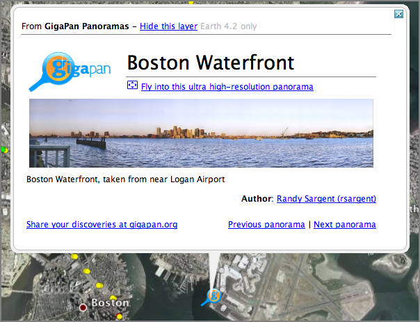
01.07.2008 12:59
NAGT - Teaching with New Geoscience Tools
The deadline has been
extended...
Teaching with New Geoscience Tools: Visualizations, Models, and Online Data
Teaching with New Geoscience Tools: Visualizations, Models, and Online Data
February 10-12, 2008, University of Massachusetts, Amherst (note that the location of this workshop has changed) Applications are still being accepted until January 14, 2008. . Geoscience today is a space-age science making extensive use of remote sensing data, remotely collected data, high performance computing, and state of the art data visualizations. These new research tools can often be accessed on-line making them particularly suitable for use in undergraduate teaching. . This workshop will bring together geoscientists and educators to look at how we currently take advantage of these new tools in undergraduate education, to look at newly emerging opportunities, and to consider what learning science has to say about teaching with these tools.
01.07.2008 09:48
vmware fusion on the mac
I'm out of time for my weekend
project. The goal was to get Windows P SP2 Enterprise running on my
MacBook Pro Core2 Duo... (2.4 GHz Intel w/ 4GB of 667 MHz DDR2
SDRAM). Here's where I am at: The mac now has 10.5 on it and about
to reboot to 10.5.1. I've got vmware fusion installed and the 1.1
update was downloaded. I've also downloaded an image of Ubuntu 8.04 Alpha 2 so I
can at least give vmware a run through. I'm also working through
fink 10.5 and hitting a lot of snags. I'm going to have to postpone
a lot of this to get some normal work done for the week, but
hopefully I will sneak in some more of this during the week. Also,
we've got someone here trying to get 10.5 on an older G4 mac laptop
that is refusing to install 10.5. I will post more as that update
progresses (or doesn't).
01.07.2008 09:02
New paper talks to pilots in the UK
From
The Ship Whispers, Nautical Psychologists [gCaptain]
The ship whisperers - As a container ship runs aground, our correspondent talks to the unsung pilots who, with courage, skill and nerve, shepherd these vast vessels to port
The ship whisperers - As a container ship runs aground, our correspondent talks to the unsung pilots who, with courage, skill and nerve, shepherd these vast vessels to port
01.07.2008 08:57
CA Shoreline Protection Regulations
California
Shoreline Protection Regulations [Steamship Mutual]
... On 17 July 2006 OSPR issued new shoreline protection requirements which call for increased performance and response times in order to further protect California's shoreline and sensitive site areas. These areas are identified in the California regulation's Shoreline Protection Tables (found in CCR, Title 14, Chapter 3, Subchapter 3, Section 818.02(f) and Subchapter 4, Section 827.02(i)) and can also be found on California's Office of Spill Prevention and Response (OSPR) website at www.dfg.ca.gov/ospr/law/regs.html. These changes came into effect for high volume ports on 1 May 2007 and for low volume ports on 1 September 2007. ...From Maritime Safety News Today - 5th January 2008 [Bob Couttie]
01.07.2008 08:53
moble sensor web
Mobile
pollution sensor web [aogleearth]
Mobile pollution sensor web: New Scientist reports that in Cambridge (UK), computer scientists have cobbled together a cheap mobile pollution sensor web using bicycle couriers, GPS devices, smartphones and phone-sized pollution sensors that record carbon monoxide, nitrogen oxide, and nitrogen dioxide levels. The devices all talk via bluetooth, and then the phone send the georeferenced data live to a server as the courier cycles about town. ...DOI: 10.1109/MDSO.2007.46 - IEEE Distributed Sytems
01.07.2008 08:45
AIS Class B mandatory for Turkish seas
From Navagear...
ID system to become mandatory for all boats on Turkish seas [Today's Zaman]
ID system to become mandatory for all boats on Turkish seas [Today's Zaman]
The Search and Rescue Coordination Center will require a boat ID system for all vessels engaged in cabotage (transporting goods or passengers between two points in the same country) in Turkey. . Officials from the Undersecretariat for Maritime Affairs, under which the Search and Rescue Coordination Center operates, said the Automatic Identification System (AIS), which collects statistical, dynamics and navigational information on vessels to increase maritime security, went into effect for vessels engaged in international transport in August 2007. . Now, all vessels, including yachts, small passenger boats, cargo vessels and fishing boats, will be required to carry the AIS equipment as of March. A total of 18,000 vessels are anticipated to be equipped with the system. The installation cost ranges between 600 and 1,000 euros. ...
01.06.2008 15:59
Mac OSX 10.5 issues
I ran into two issues today with mac
osx 10.5. The first was with the install DVD. The installer was
stuck at the point where it asks which volume to install from. I
went into the disk utility and my main partition was not showing
up. After a couple of minutes I was about to give up and
repartition the disk. Just as I was about to hit go... up came my
partition. Why did it take so long?
Next I hit trouble with the apple updater. I am using a verizon EVDO link and do not want my bandwidth used up for software updates. I'm happy to wait until I am in the office for the updates. I got a spike in network traffic with nothing running. A tcpdump showed http traffic with somewhere that doesn't resolve to anything: 128.241.218.152.http. Turns out this is apple's software update. It would be nice if there hostnames resolve so that I know that something is not hijacking my system.
And a 3rd item that is Verizon... I have been running 10.5 for a few days on a laptop. With the many reboots and misc testing that I have done, I have yet to crash the machine. Then I installed the Verizon VZAccess Manager. It asks to reboot the machine and I rebooted right into a kernel panic. Thanks Verizon! I had done the check for updates on another machine and the access manager said there were new updates. I check on the web and yes, there is a new version out... I am now using VZAccess Manager 3.10.1958d. Verizon needs some serious help with their quality control. At least their "unlimited" policy no longer will disconnect you if you transfer more than 5GB in a month. They just warn you that they will limit your bandwidth to 200kbps. Gee thanks. Oh, and their download site needs more bandwidth... I was only getting 6Kbps. The Apple Update was coming down at 14Kbps.
Next I hit trouble with the apple updater. I am using a verizon EVDO link and do not want my bandwidth used up for software updates. I'm happy to wait until I am in the office for the updates. I got a spike in network traffic with nothing running. A tcpdump showed http traffic with somewhere that doesn't resolve to anything: 128.241.218.152.http. Turns out this is apple's software update. It would be nice if there hostnames resolve so that I know that something is not hijacking my system.
And a 3rd item that is Verizon... I have been running 10.5 for a few days on a laptop. With the many reboots and misc testing that I have done, I have yet to crash the machine. Then I installed the Verizon VZAccess Manager. It asks to reboot the machine and I rebooted right into a kernel panic. Thanks Verizon! I had done the check for updates on another machine and the access manager said there were new updates. I check on the web and yes, there is a new version out... I am now using VZAccess Manager 3.10.1958d. Verizon needs some serious help with their quality control. At least their "unlimited" policy no longer will disconnect you if you transfer more than 5GB in a month. They just warn you that they will limit your bandwidth to 200kbps. Gee thanks. Oh, and their download site needs more bandwidth... I was only getting 6Kbps. The Apple Update was coming down at 14Kbps.
01.06.2008 10:52
Skiing at Mt Sunapee
Yesterday, I got in a bit of skiing
at Mt Sunapee, NH with Lynn and Eric. I haven't been skiing since
the winter of 98-99. The conditions were excellent!
01.06.2008 10:48
Mac OSX Firewire networking?
On Friday, I tried hooking up two
macs with a firewire network. I turned on sharing on my 10.5
machine and was able to mount it on the 10.4 machine with no
effort. It just worked. Today, I tried the same thing with no luck.
So very strange. When it worked, I got about 12 MB/s sustained file
transfer, which is so-so when I realized that I am using
Firewire800 that has a theoretical 100MB/s transfer
capability.
And where are the firewall settings on 10.5?
And where are the firewall settings on 10.5?
01.04.2008 17:58
Panama Accepts Electronic Logbooks
Panama Accepts Electronic Logbooks [Hydro International]
The Panamanian flag state administration has authorised the use of electronic logbooks onboard all Panamanian flag vessels. The backing of the electronic logbooks by the largest shipping flag state in the world is an important milestone for Kongsberg Maritime, who introduced such system in 2004. ...Is there an official standard format for log files?
01.04.2008 17:40
US Hydrographic Services Review Panel - Membership Solicitation
Notice
of Membership Solicitation for Hydrographic Services Review
Panel [FederalRegister.com] - Summary:
This notice responds to the Hydrographic Services Improvement Act Amendments of 2002, Public Law 107372, which requires the Under Secretary of Commerce for Oceans and Atmosphere to solicit nominations for membership on the Hydrographic Services Review Panel (the Panel). This advisory committee will advise the Under Secretary on matters related to the responsibilities and authorities set forth in section 303 of the Hydrographic Services Improvement Act of 1998, (the Act) and such other appropriate matters as the Under Secretary refers to the Panel for review and advice.
01.04.2008 17:09
LJ takes a nose dive
Looks like LiveJournal is very
unhappy at the moment...
Error running style: Style code didn't finish running in a timely
fashion. Possible causes:
* Infinite loop in style or layer
* Database busy
Thought this was a minor thing until I saw it on two different
peoples' LJ pages. However, I am sure it will be short lived and
things look happier just a few minutes later.01.04.2008 10:06
Coastal River Information Service AIS Presentation
Just found another interesting source
of information that has a great presentation on inland waterway
issues in the US:
Coastal River Information Service (CRIS) Real-time Electronic Data via Automatic Identification System [PPT] by U.S. Army Corps of Engineers
Posted on the Gulf Intracoastal Canal Association page: GICA Tools/Presenations
Coastal River Information Service (CRIS) Real-time Electronic Data via Automatic Identification System [PPT] by U.S. Army Corps of Engineers
Posted on the Gulf Intracoastal Canal Association page: GICA Tools/Presenations
01.03.2008 15:49
How to receive AIS
I was wondering if it is possible to
receive AIS with a normal receiver. Here is the answer from
ShipPlotter
FAQ:
If you want to receive AIS transmissions you really need a discriminator output on your receiver or you must use a dedicated AIS receiver. A few radios already have a discriminator output (I use a WinRadio which has a suitable output labelled 'data' and the PCR1000 receiver has a suitable output labelled '9600'), but most receivers do not have one. The good news is that adding a discriminator output to an existing receiver is generally very simple indeed. www.discriminator.nl is the place to find about discriminator taps.
01.03.2008 13:58
AIS via software radio - GNU Radio
I was hoping to work on this about a
year ago, but never got a chance. Thankfully, it looks like others
have gotten it done! This is way cool (at least to me)!!!
AIS data received in Google Earth using GNU Radio - Demodulated AIS with GNU Radio. The following image is from the site:
and
gnuais.sourceforge.net - Automatic Identification System for Linux
AIS data received in Google Earth using GNU Radio - Demodulated AIS with GNU Radio. The following image is from the site:
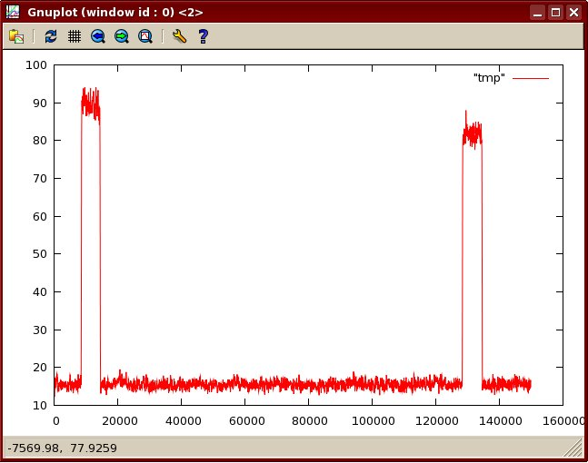
and
gnuais.sourceforge.net - Automatic Identification System for Linux
01.03.2008 13:32
eNavigation 2007 presentations online
Thanks to Fred for pointing out that
the eNavigation 2007 presenations are online here:
http://www.enavigation.org/presentations.html
http://www.enavigation.org/presentations.html
01.03.2008 09:04
AIS to make a DSC VHF call
Fred Pot pointed me to the ability of
an AIS device to assist in making a VHF DSC call. Nice!
Simrad AI50 Class B Transceiver Manual, 988-0168-001 May07
UPDATE: Thanks to gCaptain for the link... AIS as a DSC Transceiver, Jan 5th.
Simrad AI50 Class B Transceiver Manual, 988-0168-001 May07
6.10 Making a DSC Call (In map mode) To make a DSC call, the unit must be connected to a SimNet compatible DSC VHF radio. . In Display Mode highlight a vessel icon then press and hold the HOME/DSC key, the AI50 will format a Routine Individual DSC call. A "Creating DSC Call" window opens showing the MMSI number and name of the vessel you intend to call. . If this is correct and you wish to continue, press Ret MENU or > to send the call. The "Routine DSC Call" window opens confirming that the call has been created and sent to the VHF radio. . If you wish to cancel the DSC call at this stage, press the < key and the display will return to the map view. . If the AI50 is not connected to a compatible VHF radio when the DSC key is pressed a message window will open indicating that a compatible VHF radio cannot be detected. . Press the < key to return to the map view. . Note Further control for the DSC radio from this point must be done at the radio. For further information on the DSC functionality consult your radio's user manual.
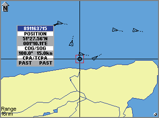
UPDATE: Thanks to gCaptain for the link... AIS as a DSC Transceiver, Jan 5th.
01.02.2008 15:18
Post winter storm
I think we need a bit of a break from
the snow. We managed to pass the record for December snowfall last
month and then it decided to snow again last night. Good for a
workout.
What's burried in my back yard?
Days where it warms up enough to melt some mean that it is going to be darn icy! The snow is working it's way towards the consistency of concrete.
What's burried in my back yard?
Days where it warms up enough to melt some mean that it is going to be darn icy! The snow is working it's way towards the consistency of concrete.
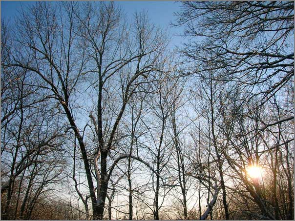
01.02.2008 11:47
Updated publications list
You might have noticed that I have been doing the end of the year house cleaning on my computers. I have found references for a number of publications that I had misplaced. These are not all true publications by some standards, but I think they are important for me to document. There are now 49 items in my bibtex file that includes 3 pubs in the works: schwehr.bib. I should have all of the documents online on my publications page
Here are the new (old) items with the bibtex key first:
- constant2004, Seismic-Sites: a Web-based Field Guide to the Faults of Southern California, SCEC Conference Poster
- schwehr2003d, Continued Exploration of the Humboldt Slide using Anisotropy of Magnetic Susceptibility, Oceans03 MTS/IEEE Poster
- nguyen1999, The Viz Architecture, NASA Report
- zbinden1999, Visualizing Mars Using Virtual Reality: A state of the art Mapping Technique Used on Mars Pathfinder, The Fifth International Conference On Mars
- zbinden1998, Mapping Mars Using Virtual Reality: The Pathfinder Experience, ISPRS WG IV/5
- stoker1997, MarsMap: Analyzing Pathfinder Data using Virtual Reality, AGU Talk
- schwehr1997, VEVI and the Stereo Pipeline for Terrain Visualization, LPSC Conference Demonstration
- christian1997b, Demonstration of the Ames Marsokhod Rover, Rover Roundup
- blackmon1997, Mars Pathfinder Terrain Model Demonstrations, SigGraph Demonstration
- schwehr1994, GRASS Usage for Virtual Planetary Exploration, NASA Report
- schwehr1993, Mars Surface Science, Precursor Rover Mission Options, etc, 1993 Stanford International Mars Mission
- schwehr1992, ROV Telepresence Software, NASA Report
- schwehr1991, Analysis of Photometric Data from a Robotic Telescope, Planet Search 1991, Using a Robotic Photometric Telescope to Search for Extrasolar Planets, NASA Ames Contractor Report
- garcia1991, Propsal to the Philippine Government for the Widespread Use of Ethanol as an Automotive Fuel, Sierra Club Internation Committee
- schwehr1990a,Acquire: Photometric Telescope Data Collection Software, NASA Report
- schwehr1990b, Martian Dust Issues: Triboluminescence and Composition, NASA Ames Contractor
- Papers - Anything that I think of as a paper or report
- PapersInProgress - Ugh... things that I have not finished
- Posters - All my Illustrator PDF files and abstracts for conference posters
- Proposals - All the proposals that I have worked on or been associated with over the years. I am missing a lot in this folder.
- Rejected - Oops. And I gave up on it.
- Reviews - Self review reports for grants and management. Wish I had all the ones I wrote back at ARC.
- Software - A bunch of tar balls of the latest released versions
- Talks - PPT, Keynote , and PDFs of talks I have given
- Teaching - Classes that I have taught
- ThesesNotSchwehr - Finding a thesis on the web can be nearly impossible, so I try to keep those for students that I have worked with or I think their thesis is particularly awesome.
01.02.2008 10:38
Embedded linux system design using syscalltrack
A while back (2002/2003), I worked on
a contract project for an embedded Linux system that was meant to
run on a solid state disk with not much space that allowed users to
plug a flash drive into the unit and have automatic updates. The
problem was that the system only had 256MB of storage space and had
to fit the Linux kernel, busy box, Mozilla, and java. One of the
really cool tricks that I used to develop this Linux distribution
was to use syscalltrack. This is a
Linux kernel module that lets you hijack system calls. I used it to
generate a complete list of files that a running system would use
during a test run. I then used a script to remove all unused files
from the system accept for a few in a known list of unused files
that I wanted to keep. I haven't tried doing this kind of thing
with Linux 2.6 kernels, but it worked greate with 2.4.
Here is what a syscalltrack log likes like for Mozilla starting up...
Here is what a syscalltrack log likes like for Mozilla starting up...
...
syscall: 71["mozilla"]: 5_open("/lib/mmx/libtermcap.so.2", 0, 0) (rule 1)
syscall: 71["mozilla"]: 5_open("/lib/libtermcap.so.2", 0, 0) (rule 1)
syscall: 71["mozilla"]: 5_open("/lib/libdl.so.2", 0, 512) (rule 1)
syscall: 71["mozilla"]: 5_open("/lib/libc.so.6", 0, 12288) (rule 1)
syscall: 71["mozilla"]: 5_open("/dev/tty", 34818, 0) (rule 1)
syscall: 71["mozilla"]: 5_open("/usr/share/locale/locale.alias", 0, 438) (rule 1)
And then a java processing kicking off:
...
syscall: 81["java"]: 5_open("/lib/libc.so.6", 0, 1024) (rule 1)
syscall: 81["java"]: 5_open("/usr/local/j2re1.4.1_02/lib/i386/jvm.cfg", 0, 438)
(rule 1)
syscall: 81["java"]: 5_open("/etc/ld.so.preload", 0, 
strace has to be done on a process by process basis, thereby
becoming very difficult to track everything that is happing on a
complete system run. I also had to make a little script to
excercise other programs on the system that I wanted to remain
(e.g. grep, sed, etc) I then ended up with a list of files that I
want to keep:
... /bin/rm /bin/sed /bin/sh /bin/stat /bin/touch /bin/umount /bin/uname /dev /dev/apm_bios /dev/console /dev/cpu/ /dev/cpu/mtrr /dev//dev/sct_log0 /dev/mem /dev/null ...I glued it all together with a lot of egrep, cut, awk, xargs, etc. scripting. This was definitely a fun project.
01.01.2008 22:07
svn properties
I've been working my way through the
SVN book a couple minutes a day and I hit properties just as I was
creating my 2008 work log and retiring my 2nd 2007 log. To have a
keyword replacement for tracking a file, I did this from the
command line:
I was also reading about arbitraty keywords. I can't think of a really good use for me right now, but I can see how it could be important tool.
% svn propset svn:keywords 'Id' kurt-2008.txt % svn proplist kurt-2008.txt -v Properties on 'kurt-2008.txt': svn:keywords : IdBy putting "$Id:$" at the top of the file, it gets replaced with the current revision information at each commit.
$Id: kurt-2007.txt 8058 2008-01-01 16:07:52Z schwehr $I'd been using "svn propedit svn:keywords" and that pops up a text editor. Not very convenient if you need to do this on many files.
I was also reading about arbitraty keywords. I can't think of a really good use for me right now, but I can see how it could be important tool.